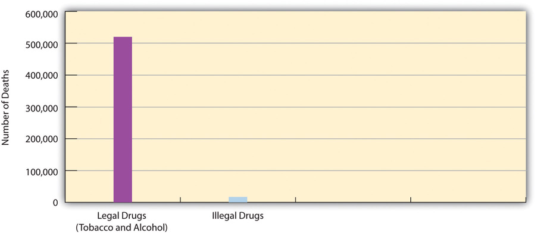
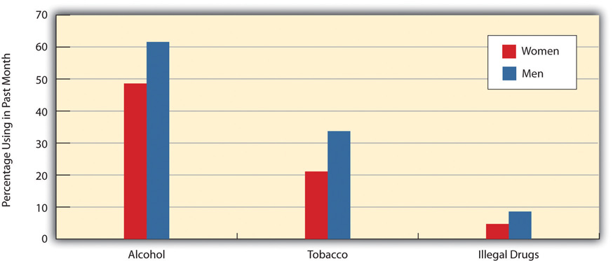
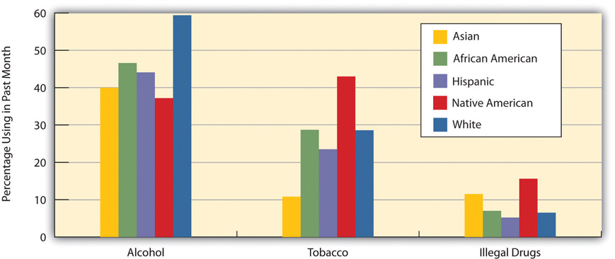
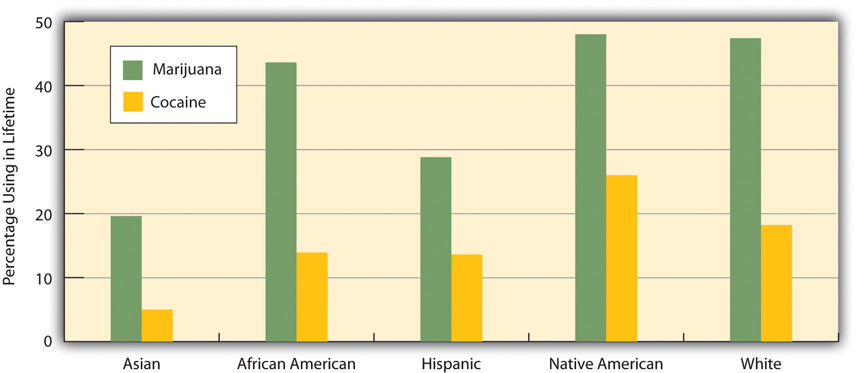
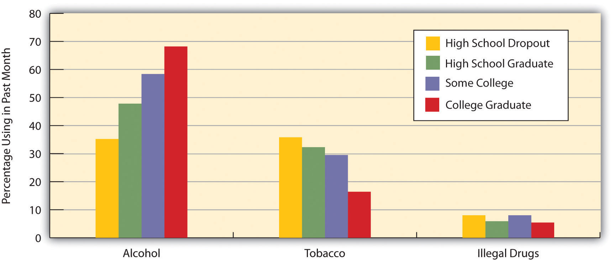
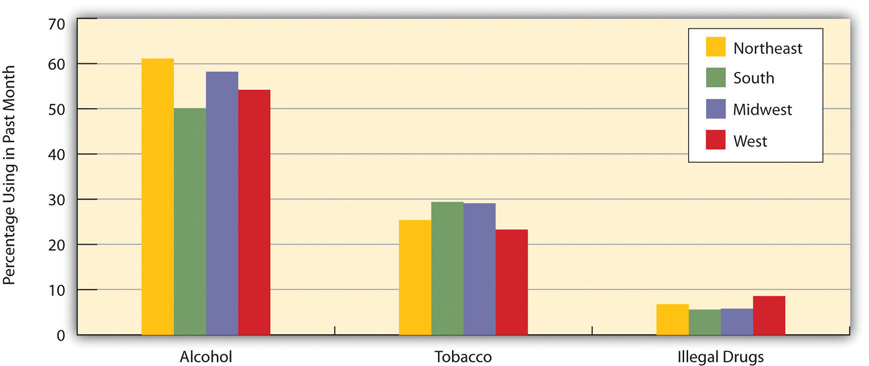
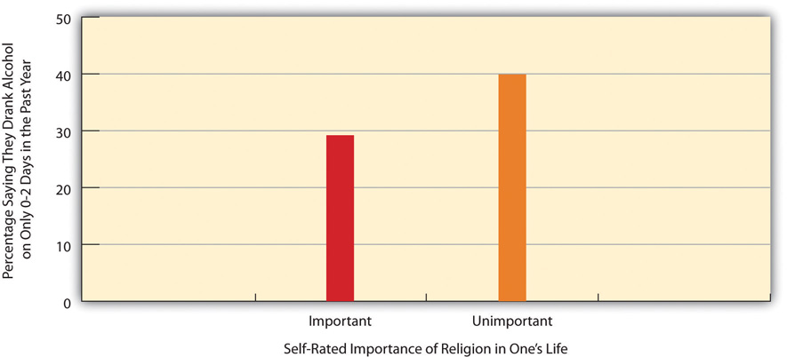

“Why Do College Students Love Getting Wasted?” the headline asked. Ohio University sociologist Thomas Vander Ven, author of a recent book on college drinking, was interviewed for this news story and had several answers to this question. First, drinking helps lessen college students’ anxieties about their courses, social relationships, and other matters. Second, it helps them have a good time and develop close friendships, including perhaps a romantic or sexual partner. Third, and perhaps most important, they drink because it’s fun. He also noted that when students get drunk, the other students who take care of them learn something about adult responsibility.
Vander Ven said that when students drink, “They’re more likely to say and do things that they normally wouldn’t do—show affection to their peers, get angry at them, get more emboldened to sing and dance and take risks and act crazy and there’s a ton of laughing that goes on. It creates this world of adventure. It creates war stories. It creates bonding rituals.” He added, “When things go wrong—the getting sick, the getting arrested, the getting upset—it gives them an opportunity to care for one another, to deliver social support. So you’ve got young adults who, for the first time, are taking care of a sick person, staying up all night with them, consoling them when they’re upset. It’s an opportunity for them to try on adult roles.”
Source: Rogers, 2011Rogers, T. (2011, August 28). Why do college students love getting wasted? Salon.com. Retrieved from http://www.salon.com/life/education/?story=/mwt/feature/2011/2008/2028/college_drinking_interview.
This news story points to two central facts that are often forgotten in discussions about alcohol and other drugs. First, because of a combination of physiological, psychological, and social factors, drugs make us feel good. Second, because drugs make us feel good, many people want to use them, come hell or high water. To acknowledge these two basic facts is not meant to excuse the use of alcohol and other drugs, which cause serious individual and societal problems. But it is meant to indicate why the United States and other nations have found it so difficult to deal with drug use.
This difficulty in turn points to the need to understand why people use alcohol and other drugs, including the influence of our sociodemographic backgrounds on the likelihood of using them. This chapter examines these and other aspects of drug use before turning to the important issue of social and political policy regarding drug use.
Shakespeare once wrote that “what’s past is prologue.” This familiar phrase means that what happened in the past provides a context for, and can help to understand and predict, the future. To the extent that the past is prologue, the history of drug use provides a sobering lesson: Drug use has been common since ancient times and has been common in almost every society. As a recent book on drug policy states, “People have used chemicals to alter their state of mind since before there were written records” (Kleiman, Caulkins, & Hawken, 2011, p. xviii).Kleiman, M. A. R., Caulkins, J. P., & Hawken, A. (2011). Drugs and drug policy: What everyone needs to know. New York, NY: Oxford University Press. If past is indeed prologue, then it is no surprise that drug use remains common in contemporary nations despite considerable efforts to reduce it.
One manifestation of the long history of drug use is that humans have used mind-altering plants since prehistoric times. “Early humans discovered that eating some plants gave a feeling of relaxation, happiness, drowsiness, or peace,” one scholar writes. “Some gave a feeling of increased energy, alertness, and stamina. And some caused strange sensations, terrifying visions, or a profoundly different awareness” (Gahlinger, 2004, p. 5).Gahlinger, P. (2004). Illegal drugs: A complete guide to their history, chemistry, use, and abuse. New York, NY: Penguin.
Examples of drug use thousands of years ago abound (Escohotado, 2010; Faupel, Horowitz, & Weaver, 2010; Goodman, Sherratt, & Lovejoy, 2007).Escohotado, A. (2010). The general history of drugs (G. W. Robinette, Trans.). Valparasio, Chile: Graffiti Milante Press; Faupel, C. E., Horowitz, A. M., & Weaver., G. S. (2010). The sociology of American drug use. New York, NY: Oxford University Press; Goodman, J., Sherratt, A., & Lovejoy, P. E. (Eds.). (2007). Consuming habits: Drugs in history and anthropology (2nd ed.). New York, NY: Routledge. Mead, an alcoholic drink made from fermented honey, was first used about 8000 BCE, and beer and berry wines were first used about 6000 BCE. The ancient Sumerians used opium starting about 5000 BCE. Ancient Egypt used alcohol in 3500 BCE, while ancient China used cannabis (the source of marijuana) around 3000 BCE. Ancient people in what is now Switzerland ate poppy seeds (the source of opium) in 2500 BCE. Coca leaves (the source of cocaine) have been chewed for thousands of years. Folk medicines made from plants and herbs have also been used since ancient times. People in ancient Palestine drank wine in 350 BCE. Ancient Greeks drank poppy juice in 300 BCE. In about the same period, South American tribes used a hallucinogen called cohoba, made from mimosa beans. The Chinese and other Asians were using opium regularly by 1000 CE. Native Americans used tobacco before being discovered by Columbus in 1492. The use of various drugs has also been common in the many societies that anthropologists have studied (Durant & Thakker, 2003; Page & Singer, 2010).Durant, R., & Thakker, J. (2003). Substance use and abuse: Cultural and historical perspectives. Thousand Oaks, CA: Sage Publications; Page, B., & Singer, M. (2010). Comprehending drug use: Ethnographic Research at the social margins. New Brunswick, NJ: Rutgers University Press.
Sociologist Erich Goode (2008, p. 176)Goode, E. (2008). Deviant behavior (8th ed.). Upper Saddle River, NJ: Prentice Hall. summarizes the history of drug use as follows: “Humans have been ingesting drugs for thousands of years. And throughout recorded time, significant numbers of nearly every society on earth have used one or more drugs to achieve certain desired physical or mental states. Drug use comes close to being a universal, both worldwide and throughout history.”
This history of drug use includes the United States, where past is again prologue. During the colonial era, tobacco was a major crop in Virginia and other colonies thanks to slave labor. After being processed, it was commonly used by colonists and also exported to Europe in great quantities (Gately, 2001).Gately, I. (2001). Tobacco: The story of how tobacco seduced the world. New York, NY: Grove Press. From the earliest colonial days, alcohol was another drug used in great quantities, as “Americans were drinkers right from the start” (Genzlinger, 2011, p. C1).Genzlinger, N. (2011, October 1). Bellying up to the time when America went dry. New York Times, p. C1. The Mayflower, the celebrated ship that brought the first Puritans to what eventually became the United States, was filled with barrels of beer. In colonial New England, rum manufacturing was a major industry, and rum drinking was common. During the early 1770s, New England had more than 140 rum distilleries, and rum consumption in the colonies averaged 7.5 million gallons annually. This massive drinking has led one author to call rum “the real spirit of 1776” (Williams, 2006).Williams, I. (2006). Rum: a social and sociable history of the real spirit of 1776. New York, NY: Nation Books. Rum was also a major export to Europe and elsewhere. In addition to rum, colonists routinely drank beer and hard cider.
During the nineteenth century, Americans began to use drugs other than alcohol in great quantities. One popular drug was coffee. Before the Civil War, Americans who drank coffee had to buy green (unroasted) coffee beans in bulk and roast their own coffee. Then in 1865, John Arbuckle, a Pittsburgh grocer, began selling roasted coffee inside a new invention—the paper bag. His bagged coffee was an instant hit across the nation, other coffee manufacturers followed suit, and coffee use by Americans greatly increased.
Alcohol also remained a very popular drug, and use of this drug during the 1800s was probably greater than during colonial America. Two reasons help account for this trend (Faupel et al., 2010).Faupel, C. E., Horowitz, A. M., & Weaver., G. S. (2010). The sociology of American drug use. New York, NY: Oxford University Press. One reason was the western frontier. As the nation moved west, many of the explorers and settlers who led the way were men who were unmarried or, if married, men who had left their families behind. To put it mildly, they drank a lot, fought a lot, and gambled a lot. A second reason was that many Irish immigrants came to the United States during a great wave of immigration that began in the mid-nineteenth century. Although it might sound like a stereotype, the Irish drank a lot of alcohol back in their homeland, and they continued to do so once they reached the United States. Regardless of who was drinking, heavy alcohol use contributed greatly to poverty, to physical assaults and homicides, and to domestic violence and other family problems.
Three other popular drugs in this era were opium, cocaine, and marijuana. Use of these drugs was so common that nineteenth-century America has been called a “dope fiend’s paradise” (Brecher, 1973).Brecher, E. M. (1973). Licit and illicit drugs. Boston, MA: Little, Brown. A brief discussion of these drugs’ histories will underscore the widespread use of drugs in the American past and also racial issues that arose when laws were passed to ban these drugs (Musto, 1999).Musto, D. F. (1999). The American disease: Origins of narcotic control (3rd ed.). New York, NY: Oxford University Press.
During the decades before and after the Civil War, the use of opium was extremely common (Goode, 2012).Goode, E. (2012). Drugs in American society (8th ed.). New York, NY: McGraw-Hill. Beyond making people feel good, opium is an effective painkiller and cough suppressant. Accordingly, it was a staple in many patent medicines, elixirs and tonics, sold back then in apothecaries, general stores, and other venues. Large numbers of people from all social backgrounds used these opium-laced medicines for problems such as depression, headaches, menstrual cramps, and toothaches. It is not much of an exaggeration to say that the United States was a nation of opium users during this period; an estimated 500,000 Americans were addicted to opium by the end of the century. As anthropologist Robert B. Edgerton (1976, pp. 57–58)Edgerton, R. (1976). Deviance: A cross-cultural perspective. Menlo Park, CA: Cummings. summarizes the situation, “The use of opium was widespread in all segments of American society. Children were calmed with opium derivatives, women used many popular patent medicines which were liberally larded with opiates, and ‘opium dens’ were probably present in all cities and most towns as well.”
Attendance at opium dens (the equivalent of today’s bar or tavern, with opium the drug of choice rather than alcohol) was a popular activity for the Chinese immigrants who began coming to the United States during the 1850s to help build the nation’s railroads and perform other jobs. White workers feared their growing numbers as a threat to their jobs, and racial prejudice against the Chinese increased. Politicians, labor unions, and other parties began to focus on the Chinese habit of smoking opium at opium dens and warned that the Chinese were kidnapping little white children, taking them to the opium dens, and turning them into “opium fiends.” This campaign had two effects: it increased prejudice against the Chinese, and it increased public concern about opium. This rising concern led San Francisco in 1875 to become the first locality to ban opium dens. Other California cities did the same, and the state itself banned opium dens in 1881. Three decades later, the federal government banned the manufacture, sale, and use of opium (except for use with a physician’s prescription) when it passed the Harrison Narcotics Act in 1914.
Cocaine was another drug that was very popular in the nineteenth century, beginning in the 1880s, thanks in part to enthusiastic claims by Sigmund Freud and American physicians that cocaine could help relieve asthma, depression, hay fever, sexual impotence, toothache pain, and a host of other problems. Like opium, cocaine was a popular ingredient in the many patent medicines that people bought at various stores, and the US Army Surgeon-General advocated its medical use. It was a major ingredient in a new beverage introduced in 1886, Coca-Cola, which became an instant hit because people naturally felt so good when they drank Coke! During the next two decades, however, concern grew about cocaine’s effects. Some of this concern was fueled by the absurd belief that African Americans who used cocaine became extra strong, dangerous, and even invulnerable to bullets. Cocaine was heavily taxed by the 1914 Harrison Narcotics Act and later banned.
A third legal drug during the late nineteenth century was marijuana. It joined opium and cocaine in being a common ingredient in patent medicines, and it was a popular drug for problems like migraine headaches, menstrual cramps, and toothache pain. After the Mexican Revolution of 1910, Mexicans moved to the United States in increased numbers and brought with them their habit of marijuana use. Whites feared that Mexicans would take their jobs, and, similar to what happened with opium and Chinese immigrants during the 1870s, began to charge that Mexicans who used marijuana would become violent and more likely to rape and murder innocent white victims. This racially prejudiced claim increased concern about marijuana and helped lead to the federal Marijuana Tax Act of 1937 that banned its use.
This brief history shows that drug use has been part of the American culture ever since the nation began. If past is prologue, it should come as no surprise that drugs remain part of the American culture today, and it should also come as no surprise that efforts to reduce or eliminate drug use often meet with much resistance and little success. As the United States continues to try to deal with drug use, these basic facts must not be forgotten.
A drugAny substance other than food that, when taken into the body, affects the structure and/or functioning of the body. may be defined as any substance other than food that, when taken into the body, affects the structure and/or functioning of the body. Defined this way, many common substances contain drugs or are drugs: coffee, No-Doz, and other products to keep us alert; aspirin, acetaminophen, ibuprofen, and other pain relievers; Tums, Rolaids, and other products that reduce heartburn; Metamucil and other products that reduce constipation; Robitussin, Sudafed, and other cold medicines; and so forth. If you have ever used one of these products, you are technically a drug user, however silly that might sound.
Many prescription drugs also certainly exist: Prozac and other antidepressants; Valium and other tranquilizers; Lipitor and other cholesterol drugs; Yasmin, Yaz and other birth control pills; Viagra and other products that relieve erectile dysfunction; and so forth. Sales of these prescription drugs amount to tens of billions of dollars annually.
The following substances are also drugs: alcohol, ecstasy, cocaine, heroin, marijuana, LSD, methamphetamine, PCP, and tobacco. Much has been written about these drugs, and we will discuss them further later in this section. But note that two of these drugs, alcohol and tobacco, are legal after a certain age, while the remaining drugs are illegal.
One of the problems in deciding how to think about and deal with drugs is that this distinction between legal drugs and illegal drugs has no logical basis. It makes sense to assume that the illegal drugs should be the ones that are the most dangerous and cause the most physical and social harm, but that is not true. Rather, alcohol and tobacco cause the most harm even though they are legal. As Kleiman et al. (2011, p. xviii)Kleiman, M. A. R., Caulkins, J. P., & Hawken, A. (2011). Drugs and drug policy: What everyone needs to know. New York, NY: Oxford University Press. note about alcohol, “When we read that one in twelve adults suffers from a substance abuse disorder or that 8 million children are living with an addicted parent, it is important to remember that alcohol abuse drives those numbers to a much greater extent than does dependence on illegal drugs.” Tobacco kills about 435,000 Americans annually by causing premature death, and alcohol kills about 85,000 annually through its effects on the liver and other body organs (Mokdad, Marks, Stroup, & Gerberding, 2004).Mokdad, A. H., Marks, J. S., Stroup, D. F., & Gerberding, J. L. (2004). Actual causes of death in the United States, 2000. Journal of the American Medical Association, 291(10), 1238–1245.
Putting these numbers together, some 520,000 Americans die annually from alcohol and tobacco use. Meanwhile, the physiological effects of all illegal drugs combined kill an estimated 17,000 Americans annually (Mokdad et al., 2004)Mokdad, A. H., Marks, J. S., Stroup, D. F., & Gerberding, J. L. (2004). Actual causes of death in the United States, 2000. Journal of the American Medical Association, 291(10), 1238–1245., a number that is only just above the number of annual deaths (16,500) from nonsteroidal inflammatory drugs (NSAIDs) such as aspirin and ibuprofen (Frech & Go, 2009).Frech, E. J., & Go, M. F. (2009). Treatment and Chemoprevention of NSAID-associated Gastrointestinal Complications. Therapeutics and Clinical Risk Management, 5, 65–73. Figure 7.1 "Annual Deaths from Legal and Illegal Drugs" depicts the huge difference between deaths from alcohol and tobacco as legal drugs and from illegal drugs.
Figure 7.1 Annual Deaths from Legal and Illegal Drugs
Source: Mokdad, A. H., Marks, J. S., Stroup, D. F., & Gerberding, J. L. (2004). Actual causes of death in the United States, 2000. Journal of the American Medical Association, 291(10), 1238–1245.
We return to the issue of the relative harm of legal and illegal drugs toward the end of the chapter when we discuss drug policy. In the meantime, keep in mind two related facts: (1) all drugs can be dangerous, and (2) some drugs are much more dangerous than others. Two aspirins are safe to take, but a bottle of aspirin can kill someone. Two cups of coffee a day are fine, but drinking many cups a day can cause anxiety, insomnia, and headaches. One drink of alcohol is safe to take, but several drinks in a short time amount to binge drinking, and long-term use of alcohol can kill someone. One snort of cocaine is usually safe, but even one snort can result in a sudden fatal heart attack, and long-term use often has serious health consequences.
Drugs are commonly classified into certain categories according to their physiological effects. All drugs may make us feel good, but they do so in different ways. Because some drugs are much more potent than other drugs, there is much variation within each category. Partly because many drugs have multiple effects, many different classifications of drugs exist. A common classification includes the following categories: depressants, hallucinogens, marijuana, narcotics, and stimulants.
DepressantsDrugs that slow down the activity of the central nervous system; depending on the specific drug, they help induce drowsiness and relaxation, and they can reduce anxiety and pain. slow down the activity of the central nervous system. Depending on the specific drug, they help induce drowsiness and relaxation, and they can reduce anxiety and pain. Several types of depressants exist. Analgesics reduce pain and include over-the-counter products such as aspirin, acetaminophen (the major ingredient in Tylenol), and ibuprofen (the major ingredient in Advil and Motrin), and many prescription medicines that contain acetaminophen. Sedatives help people relax and include alcohol, barbiturates, and sleep medicines such as Sominex and Tylenol PM (both over-the-counter) and Ambien and Valium (both prescription). Large doses of depressants may lead to physical dependence and sometimes death.
HallucinogensMind-altering drugs that cause delusions or hallucinations. are mind-altering drugs that cause delusions or hallucinations. Their ranks include ecstasy, LSD, mescaline, and PCP. Many people who use a hallucinogen report that the mind-altering effects of the drug provide them a truly wonderful experience, but many also find the effects to be troubling at best and horrible and terrifying at worst. Long-term effects include hallucinations that occur without any drug use preceding them.
Because marijuana’s effects do not fit neatly into any other category of drug, marijuana (along with its close cousin, hashish) is often considered to be its own category. As we will see later, it is by far the most popular illegal drug in the United States. Its effects include distortion of time and space, euphoria, hunger, increased sensory perception, and relaxation.
NarcoticsDrugs derived from opium that slow down the central nervous system, relieve pain, and induce drowsiness, euphoria, and relaxation. are sometimes classified under depressants because they slow down the central nervous system, but they are often still considered as their own category. They are highly effective at relieving pain and are a common substance in prescription medicines for severe pain. By definition, all narcotics are derived from opium, either in its natural form or in a synthesized form. Examples of narcotics include codeine, heroin, methadone, and morphine. In addition to relieving pain, narcotics may induce drowsiness, euphoria, and relaxation. Although narcotics do not damage bodily organs, they are very physically addictive, and high doses can be fatal.
StimulantsDrugs that speed up the central nervous system and increase alertness and energy and possibly produce euphoria or anxiety. have the opposite effect of depressants by speeding up the central nervous system. They increase alertness and energy and can produce euphoria or anxiety. Some are legal and some are illegal, and many very different drugs are all considered stimulants: caffeine, cocaine, methamphetamine and other amphetamines, nicotine (tobacco), and Ritalin. Stimulants can be very physically addictive, and nicotine is thought to be more addictive than heroin. While caffeine is very safe as long as someone does not have too many cups of coffee daily, many other stimulants may have dangerous short-term or long-term side effects on the cardiovascular system.
Not all drugs can be discussed in one chapter. In choosing which drugs to discuss in a book on social problems, it makes sense to discuss the drugs that probably concern Americans the most. We thus focus in the remainder of this section mostly on alcohol, tobacco, marijuana, cocaine, and heroin.
As noted earlier, alcohol and tobacco (nicotine) are two legal drugs that are very common and that together kill hundreds of thousands of Americans annually. According to national survey evidence collected by the Substance Abuse and Mental Health Services Administration (SAMHSA) of the federal government, most people 12 and older (as well as many younger than 18) have tried alcohol, and over half the public drinks currently (defined as having had at least one drink in the past month). While many people have tried tobacco, only slightly more than one-fourth of the public uses it currently (at least once during the past month). Table 7.1 "Prevalence of Alcohol and Tobacco Use, Ages 12 and Older, 2010*" summarizes the prevalence of alcohol and nicotine use. Translating some of these percentages into actual numbers, almost 70 million Americans are current tobacco users (mostly by smoking cigarettes), and 131 million are current alcohol users.
Table 7.1 Prevalence of Alcohol and Tobacco Use, Ages 12 and Older, 2010*
| Lifetime | Past year | Past month | |
|---|---|---|---|
| Alcohol | 82.5 | 66.4 | 51.8 |
| Tobacco | 68.7 | 32.8 | 27.4 |
| * Percentage using in designated time period | |||
Source: Substance Abuse and Mental Health Services Administration. (2011). Results from the 2010 national survey on drug use and health: Summary of national findings. Rockville, MD: Author.
With this backdrop, we now discuss these two legal but very harmful drugs in greater detail.
Moderate alcohol use (more than one drink per day for an adult female and two drinks per day for an adult male) is relatively safe for most people and may even have health benefits (Harvard School of Public Health, 2012).Harvard School of Public Health. (2012). Alcohol: Balancing risks and benefits. Retrieved March 30, 2012, from http://www.hsph.harvard.edu/nutritionsource/what-should-you-eat/alcohol-full-story/index.html. The problem is that many people drink much more than moderately. As the Harvard School of Public Health (2012)Harvard School of Public Health. (2012). Alcohol: Balancing risks and benefits. Retrieved March 30, 2012, from http://www.hsph.harvard.edu/nutritionsource/what-should-you-eat/alcohol-full-story/index.html. explains, “If all drinkers limited themselves to a single drink a day, we probably wouldn’t need as many cardiologists, liver specialists, mental health professionals, and substance abuse counselors. But not everyone who likes to drink alcohol stops at just one. While most people drink in moderation, some don’t.”
SAMHSA survey data show the extent of such problem drinking, as its survey measures both binge drinkingFive or more drinks on the same occasion—within two hours of each other—on at least one day in the past month. (five or more drinks on the same occasion—within two hours of each other—on at least one day in the past month) and heavy drinkingBinge drinking on at least five days in the past month. (binge drinking on at least five days in the past month). Table 7.2 "Prevalence of Binge and Heavy Alcohol Use, 2010*" presents the relevant data for people 12 and older and also for those aged 18–20, the customary age for people in their first two years of college.
Table 7.2 Prevalence of Binge and Heavy Alcohol Use, 2010*
| Ages 12 and older | Ages 18–20 | |
|---|---|---|
| Binge use | 23.1 | 33.3 |
| Heavy use | 6.7 | 11.3 |
| * Percentage engaging in alcohol use | ||
Source: Substance Abuse and Mental Health Services Administration. (2011). Results from the 2010 national survey on drug use and health: Summary of national findings. Rockville, MD: Author.
As Table 7.2 "Prevalence of Binge and Heavy Alcohol Use, 2010*" indicates, almost one-fourth of all people 12 and older and one-third of those aged 18–20 engage in binge drinking, while almost 7 percent and about 11 percent, respectively, engage in heavy drinking. The figures for those 12 and older translate to almost 59 million binge drinkers and 17 million heavy drinkers. These numbers show that tens of millions of people abuse alcohol annually and underscore the problem of dealing with problem drinking.
The amount of alcohol consumed annually by occasional, moderate, and heavy drinkers is staggering. The relevant data appear in Table 7.3 "Alcohol Consumption in the United States, 2010". Americans drink 7.6 billion gallons of alcohol annually, equivalent to 126 billion standard drinks. This number of drinks works out to 496 drinks per person annually for the 12 and older population and 748 drinks per person for the 12 and older population that drinks at all. Keep in mind that this is just an average. The heavy drinkers identified in Table 7.2 "Prevalence of Binge and Heavy Alcohol Use, 2010*" have many more than 748 drinks every year, while light drinkers have only a relative handful of drinks.
Table 7.3 Alcohol Consumption in the United States, 2010
| Number of gallons | Equivalent number of standard drinks* | |
|---|---|---|
| Beer | 6.4 billion | 68.2 billion |
| Wine | 713.2 million | 18.3 billion |
| Spirits | 463.1 million | 39.5 billion |
| Total | 7.6 billion | 126.0 billion |
| * one drink = 12 ounces of beer, 5 ounces of wine, or 1.5 ounces of spirits | ||
Source: Beer Institute. (2011). Brewers almanac, 2011. Washington, DC: Author.
As noted earlier, alcohol has a long history in the United States and an even longer history in much of the rest of the world. When we think about the tens of millions of Americans who drink at least occasionally, the ads for beer and wine and hard liquor that appear regularly in the popular media, and the thousands of bars and related venues across the country, it is certainly no exaggeration to say that we have a drinking culture.
Once upon a time, the federal and state governments tried to eliminate this culture. We are speaking, of course, about Prohibition. The passage of the Eighteenth Amendment to the US Constitution in January 1919 banned the manufacture, sale, and transportation of alcohol; the ban took effect a year later. For reasons we will discuss later, the ban was eventually deemed a failure, and the passage of the Twenty-First Amendment in 1933 repealed the Eighteenth Amendment. The manufacture, sale, and transportation of alcohol became legal once again.
Alcohol manufacturing and sales are a major industry worldwide today. Several alcohol companies rank among the largest corporations in the world as well as in the United States (Jernigan, 2009).Jernigan, D. H. (2009). The global alcohol industry: An overview [Supplmental material]. Addiction, 104, 6–12. US alcohol sales amount to about $160 billion annually, and they rose by 20 percent in the 2010–2011 period during the faltering economy (Smith, 2011).Smith, A. (2011, June 9). Alcohol Sales Thrive in Hard Times. CNN. Retrieved from http://money.cnn.com. The amount of money the public spends on alcohol equals 12.5 percent of what it spends on food (US Department of Agriculture, 2011).US Department of Agriculture. (2011). Food CPI and expenditures: Table 1. Retrieved September 19, 2011, from http://www.ers.usda.gov/Briefing/CPIFoodAndExpenditures/Data/Expenditures_tables/table1.htm. The alcohol industry provides about 2 million jobs annually, more than $40 billion in wages, and more than $50 billion in taxes, and it contributes more than $160 billion to the annual national economy (Distilled Spirits Council of the United States, 2011).Distilled Spirits Council of the United States. (2011). Economic contribution of alcohol beverage industry. Retrieved September 19, 2011, from http://www.discus.org/pdf/ATT2_Economic_Contribution.pdf. All these figures show that the alcohol industry plays a significant role in the US economy.
Despite this role, if the United States does indeed have a drinking culture, the alcohol industry bears a major share of the responsibility. As the American Medical Association (2004)American Medical Association. (2004). Alcohol industry 101: Its structure & organization. Chicago, IL: Author. has stated,
Like the tobacco industry, the alcohol industry produces a legal, widely consumed drug; is dominated by relatively few producers; and utilizes a powerful combination of advertising dollars, savvy marketing, political campaign contributions, and sophisticated lobbying tactics to create and maintain an environment favorable to its economic and political interests. It requires the recruitment of new, youthful drinkers to maintain and build its customer base…As a chemical that affects our bodies, alcohol is a powerful drug resulting in more premature deaths and illnesses than all illicit drugs combined. Yet the industry has shaped public opinion and forced government to treat it not as a drug but as a cultural artifact, a valued legal commodity, almost a food, even a necessity of life.
As just one example of how the alcohol industry promotes its “powerful drug,” the headline of a recent news article declared that the “alcohol companies go online to lure young drinkers” (Gardner, 2010).Gardner, A. (2010, May 3). Report: Alcohol Companies go online to lure young drinkers. USA Today. Retrieved from http://www.usatoday.com/news/health/index. According to the report, alcohol companies are increasingly using Facebook and other social media to persuade young people to buy and drink their products. Not surprisingly, many of these young targets turn out to be under the legal drinking age of 21 because they are easily able to gain access to alcohol sites. This problem led a public health professor to observe, “Close to 5,000 people under the age of 21 die of alcohol overuse each year. Virtual worlds show all of the appeal and none of the consequences of alcohol use and undercut efforts to reduce the incidence of underage drinking. At this point, alcohol companies appear limited only by their imaginations and pocketbooks” (Gardner, 2010).Gardner, A. (2010, May 3). Report: Alcohol companies go online to lure young drinkers. USA Today. Retrieved from http://www.usatoday.com/news/health/2010-05-23-alcohol-teens_N.htm.
Despite alcohol’s immense popularity, the fact remains that more than 18 million Americans abuse it (Harvard School of Public Health, 2012).Harvard School of Public Health. (2012). Alcohol: Balancing risks and benefits. Retrieved March 31, 2012, from http://www.hsph.harvard.edu/nutritionsource/what-should-you-eat/alcohol-full-story/index.html. This heavy rate of abuse means that alcohol has serious personal and social consequences. One set of consequences involves personal health. We noted earlier that alcohol abuse is responsible for about 85,000 deaths annually through the physiological damage it does. Heavy alcohol use can destroy the liver, increase blood pressure, weaken the heart and immune system, and cause sexual dysfunction. It can lead to neurological problems and also raises the risk of incurring several kinds of cancer. Binge drinking can cause serious immediate health problems because it may lead to someone overdosing on alcohol. About 800,000 adults are hospitalized every year for alcohol overdoses, and tens of thousands more are hospitalized because they have consumed alcohol along with prescription narcotic pain medications, a combination that can be deadly (National Institutes of Health, 2011).National Institutes of Health. (2011). NIH study finds hospitalizations increase for alcohol and drug overdoses. Retrieved September 21, 2011, from http://www.nih.gov/news/health/sep2011/niaaa-20.htm.
In addition to these health problems, alcohol use is responsible for more than 16,000 traffic fatalities annually, and it plays an important role in violent crime (Felson, Teasdale, & Burchfield, 2008).Felson, R. B., Teasdale, B., & Burchfield, K. B. (2008). The influence of being under the influence. Journal of Research in Crime & Delinquency, 45(2), 119–141. As almost anyone with an alcoholic family member can attest, alcohol abuse can also cause many problems for families, including domestic violence and divorce and the stress that results from having to deal with someone’s alcoholism on a daily basis. (The Note 7.13 "Children and Our Future" box discusses the impact of parental alcoholism on children.) Alcohol abuse costs the United States more than $185 billion each year in medical expenses, lost earnings because of alcohol-related illness or premature death, lost earnings by victims of violent crime, and alcohol-caused traffic accidents (Harvard School of Public Health, 2012).Harvard School of Public Health. (2012). Alcohol: Balancing risks and benefits. Retrieved March 31, 2012, from http://www.hsph.harvard.edu/nutritionsource/what-should-you-eat/alcohol-full-story/index.html.
Children of Alcoholics
As with so many social problems, one of the saddest consequences of alcohol abuse involves children. About one-fifth of children have lived with an alcoholic parent or other adult. Whether because alcoholism is partly inherited or because children tend to use their parents as role models, children of alcoholics are four times more likely than children of nonalcoholics to become alcoholics themselves by the time they reach adulthood.
Because living with an alcoholic parent is often both chaotic and unpredictable, it is no surprise that children of alcoholics often experience a great deal of stress and other difficulties that may also account for their greater tendency to become alcoholics. Compared to other children, they are more likely to be neglected and/or abused by their parents, and they are also more likely to miss school, have lower grades, and engage in disruptive behavior. In addition, they are at great risk for eating disorders and substance abuse other than alcohol abuse. The stress they experience can also harm their neurological development and immune system and put them at greater risk for different kinds of illness and disease. Children of alcoholics are also at greater risk for several kinds of psychological and emotional problems. These include (1) guilt, because they may blame themselves for their parent’s drinking; (2) anxiety, because they worry about their parent’s health and may see their parents arguing and fighting; (3) embarrassment that leads them not to invite friends over to visit nor to ask another adult for help; (4) lack of trust in other people, because they have learned not to trust their alcoholic parent; and (5) anger, confusion, and depression.
One special problem that children of alcoholics face is that they are “forced into adulthood.” They often find themselves having to care for younger siblings and even for their alcoholic parent. By taking on such a heavy responsibility, they in effect become adults at too tender an age. This responsibility weighs on them and helps account for the psychological and emotional difficulties they often experience.
Mental health professionals strongly advise that children of alcoholics receive counseling and other kinds of support to help them deal with their family experiences. Group support programs for teenaged children may be very helpful. Perhaps the best known such program is Alateen, which also services teenagers who want help dealing with an alcoholic friend. Teenagers at Alateen meetings share their experiences, learn how to deal with the special difficulties that stem from having a relative or friend with an alcohol problem, and provide emotional support for each other. One important message they learn from Alateen is that they are in no way responsible for the alcoholism of their parent, other relative, or friend.
Alateen has helped many young people, as this testimonial from “Lizzy” attests: “Alateen has helped me a lot over the years…From the day I went to my first meeting, the door to my happiness was flung open. With the help of the Alateen Group Sponsors and my fellow teens, my life has become what I always wanted it to be. My goal for success in the program was fulfilled. I have been given a second chance at life and I have Alateen to thank for that.”
Young children and teenagers are resilient, but children of alcoholics have to be especially resilient. Programs like Alateen help give them a second chance.
Sources: Alateen, 2011; American Academy of Child and Adolescent Psychiatry, 2006; James, 2008Alateen. (2011). Am I a peacemaker or a creator of chaos. Alateen Talk. Retrieved from http[0]://www.al-anon.org/alateen-talk; American Academy of Child and Adolescent Psychiatry. (2006). Children of alcoholics. Retrieved October 4, 2011, from http://www.aacap.org/galleries/FactsForFamilies/17_children_of_alchoholics.pdf; James, S. D. (2008, September 10). Children of alcoholics forced into adulthood. abcnews.com. Retrieved from http://abcnews.go.com/Health/story?id=5770753&page=5770751.
Alcohol abuse is also a problem on college and university campuses across the United States. Based on the SAMHSA survey evidence discussed earlier, full-time college students ages 18–22 drink more often and more heavily than their peers who are not in college (Substance Abuse and Mental Health Services Administration, 2008).Substance Abuse and Mental Health Services Administration. (2008). Underage alcohol use among full-time college students. Retrieved September 20, 2011, from http://oas.samhsa.gov/2k6/college/collegeUnderage.htm. Among full-time college students ages 18–20, who are all too young to drink legally, about 40 percent have engaged in binge drinking in the past month, and 17 percent have engaged in heavy drinking as defined earlier. Binge drinking on and off campus is so common that binge drinkers consume 91 percent of all the alcohol that college students drink.
Binge drinking by college students has many serious consequences (Center for Science in the Public Interest, 2008; National Center on Addiction and Substance Abuse, 2007).Center for Science in the Public Interest. (2008). Binge drinking on college campuses. Retrieved September 20, 2011, from http://www.cspinet.org/booze/collfact1.htm; National Center on Addiction and Substance Abuse. (2007). Wasting the best and the brightest: Substance abuse at America’s colleges and universities. New York, NY: Author. The following are consequences with approximate figures:
Nicotine, the major drug in tobacco, is another legal but very dangerous drug. As we saw earlier, its use kills four times as many people every year as those killed by alcohol use. Tobacco is a slow poison. If it were not already a legal drug used by millions, and a company had just manufactured cigarettes for the first time, the Food and Drug Administration would never approve this product. Fortunately for tobacco companies, nicotine does not distort perception the way that alcohol and many other psychoactive drugs do. Someone smoking or otherwise using tobacco can safely drive a car, operate machinery, and so forth, and someone “under the influence” of tobacco does not become violent.
If you have ever watched any number of pre-1970s movies or television shows like “Mad Men” that portray life back then, you know that the United States used to have a tobacco culture the way it now has an alcohol culture. Many, many people smoked cigarettes, and a large number smoked cigars or pipes. This particular drug culture began to abate in the 1970s after much evidence mounted about the deaths and other serious health effects of tobacco use and especially about the dangers of second-hand smoke. Whereas college students a generation ago often sat in smoke-filled classrooms and Americans generally sat in smoke-filled restaurants and other venues, today most Americans can count on being in enclosed public spaces in which smoking is banned.
Even so, we have already seen that more than one-fourth of Americans 12 and older, or some 70 million people, are still current users (past month) of tobacco. Almost one-fifth of American adults (18 and older), or 45.3 million adults, smoke cigarettes daily or occasionally (King, Dube, Kaufmann, Shaw, & Pechacek, 2011).King, B., Dube, S., Kaufmann, R., Shaw, L., & Pechacek, T. (2011). Vital signs: Current cigarette smoking among adults aged ≥18 years—United States, 2005–2010. Morbidity and Mortality Weekly Report, 60(35), 1207–1212. Thanks to the greater knowledge about tobacco’s health effects, public education campaigns about these effects, heavy taxes on cigarettes, and changing attitudes about tobacco, these numbers represent a significant decline from a generation ago.
Tobacco use causes more preventable death and illness in the United States than any other cause of death; if no one used tobacco, the more than 400,000 tobacco-related deaths each year would not occur. As we think about tobacco, this startling statistic needs to be kept in mind: About half of all cigarette smokers will one day die from a premature death caused by a smoking-related illness (King et al., 2011).King, B., Dube, S., Kaufmann, R., Shaw, L., & Pechacek, T. (2011). Vital signs: Current cigarette smoking among adults aged ≥18 years—United States, 2005–2010. Morbidity and Mortality Weekly Report, 60(35), 1207–1212. To repeat what was said just earlier, nicotine is a slow poison.
Tobacco kills in several ways. Smoking causes 80–90 percent of all lung cancers, and it greatly increases the risk of emphysema and other lung disease, coronary heart disease, and stroke. In addition to lung cancer, tobacco use also causes several other cancers, including bladder cancer, cervical cancer, esophageal cancer, stomach cancer, and throat cancer. Women who smoke are at greater risk for lower bone density and hip fracture when they get older.
The economics of tobacco use are also worth knowing. Americans spend about $90 billion annually on tobacco products, with most of this amount spent on cigarettes (Centers for Disease Control and Prevention, 2011).Centers for Disease Control and Prevention. (2011). Economic facts about US tobacco production and use. Retrieved September 20, 2011, from http://www.cdc.gov/tobacco/data_statistics/fact_sheets/economics/econ_facts/. They purchase more than 300 billion cigarettes annually, with most of the cigarettes sold by three companies. Cigarette smoking is estimated to cost almost $200 billion annually in medical expenses and lost economic productivity. This works out to a national economic loss of about $10.50 for every pack of cigarettes that is sold.
One interesting and very important fact about the economics of cigarette smoking is what happens when the cost of cigarettes is increased. Most smokers begin their deadly habit during adolescence or young adulthood. Because this is a period of their lives when they do not have much money, increases in the cost of cigarettes are particularly useful in persuading some of these young people not to buy cigarettes. Government data indicate that every 10 percent increase in the price of cigarettes reduces cigarette consumption among young people by 4 percent (Centers for Disease Control and Prevention, 2011).Centers for Disease Control and Prevention. (2011). Economic facts about US tobacco production and use. Retrieved September 20, 2011, from http://www.cdc.gov/tobacco/data_statistics/fact_sheets/economics/econ_facts/. A similar but smaller effect occurs among older smokers.
Earlier we said that the alcohol industry plays a major role in the amount of drinking that occurs in the United States. The same is true of the tobacco industry and smoking. This industry spends about $15 billion annually—or an average of $41 million daily—in advertising, sponsorship of public events, and other activities to promote its deadly product, and for many years hid or distorted data about the deadly effects of cigarette smoking (Brandt, 2009).Brandt, A. (2009). The cigarette century: The rise, fall, and deadly persistence of the product that defined America. New York, NY: Basic Books. Because of funding cutbacks during the recent faltering economy, the states have reduced their media campaigns and other efforts aimed at reducing smoking. This reduction, combined with the tobacco industry’s huge promotional spending, leads one public health professor to lament, “The tobacco companies are winning the battle” (Martin, 2011).Martin, T. W. (2011, September 6). Fewer Americans are smoking, and those who do puff less. The Wall Street Journal. Retrieved from http://blogs.wsj.com/health/2011/2009/2006/fewer-americans-are-smoking-and-those-who-do-puff-less/.
The SAMHSA survey also gathers data from its thousands of respondents about illegal drug use. Table 7.4 "Prevalence of Illegal Drug Use, Ages 12 and Older, 2010*" presents these data for several illegal drugs and shows that use of these drugs is far from rare.
Table 7.4 Prevalence of Illegal Drug Use, Ages 12 and Older, 2010*
| Lifetime | Past year | Past month | |
|---|---|---|---|
| Any illegal drug | 47.1 | 15.3 | 8.9 |
| Illegal drug other than marijuana | 30.0 | 8.1 | 3.6 |
| Marijuana/hashish | 41.9 | 11.5 | 6.9 |
| Cocaine/crack | 14.7 | 1.8 | 0.6 |
| Hallucinogens | 14.8 | 1.8 | 0.5 |
| Heroin | 1.6 | 0.2 | 0.1 |
| Stimulants | 8.5 | 1.1 | 0.4 |
| Nonmedical use of prescription-type drugs† | 20.4 | 6.3 | 2.7 |
| * Percentage using in designated time period | |||
| † Includes stimulants | |||
Source: Substance Abuse and Mental Health Services Administration. (2011). Results from the 2010 national survey on drug use and health: Summary of national findings. Rockville, MD: Author.
The following figure from Table 7.5 "Prevalence of Illegal Drug Use, Ages 18–20, 2010*" is striking: 47.1 percent of all Americans ages 12 and older have used an illegal drug at least once in their lifetimes. This percentage translates to almost 120 million people. In terms of lifetime use, the single most popular illegal drug is easily marijuana, but 30 percent of Americans, or 76 million people, have used an illegal drug other than marijuana. Almost 15 percent, or more than 37 million people, have used cocaine/crack or hallucinogens, and more than 20 percent, or almost 52 million people, have used prescription drugs illegally. These percentages and the numbers of people associated with them all indicate that lifetime illegal drug use in the United States is widespread.
Despite this fact, most public health experts are primarily concerned with current (past month) illegal drug use. The percentages for past-month (and also past-year) use in Table 7.5 "Prevalence of Illegal Drug Use, Ages 18–20, 2010*" are noticeably smaller than those for lifetime use. They indicate that most people who have used illegal drugs in their lifetimes are no longer using them, or at least have not used them in the past year or past month. Most of these lifetime users tried their illegal drug once, twice, or a few times and then stopped using it, and some may have used it more often but then stopped. In any event, it is the current, past-month users who raise the most concern for our society in general and for the public health and legal communities and other sectors of our society that deal with illegal drug use and its effects.
In looking at current illegal drug use, we see that 8.9 percent of the public falls into this category. This percentage translates to almost 23 million Americans, no small number by any means. Their favorite illegal drug is marijuana (and hashish), but 3.6 percent, or 9 million people, have used an illegal drug other than marijuana in the past month. These users favor prescription drugs used for nonmedical reasons. Despite the publicity that cocaine/crack still receives, less than 1 percent of the public has used it in the past month, and less than 2 percent has used it in the past year. These small percentages, though, still translate to 1.5 million people and 5.5 million people, respectively.
The percentages in Table 7.4 "Prevalence of Illegal Drug Use, Ages 12 and Older, 2010*" underestimate the problem of illegal drug use in at least two respects. First, the SAMHSA survey does not include people whose illegal drug use is especially high: the homeless, runaway teenagers, jail and prison inmates, and youths in detention centers. Second, and conversely, the SAMHSA survey includes people whose illegal drug use is relatively low—namely, young adolescents and people in their middle age and older years. For this reason, it is instructive to examine the prevalence of illegal drug use among the people who are in their “prime” ages for it: those who are 18–20 years old. Accordingly, Table 7.5 "Prevalence of Illegal Drug Use, Ages 18–20, 2010*" presents the appropriate figures for Americans in this age group.
Table 7.5 Prevalence of Illegal Drug Use, Ages 18–20, 2010*
| Lifetime | Past year | Past month | |
|---|---|---|---|
| Any illegal drug | 52.8 | 37.7 | 23.1 |
| Illegal drug other than marijuana | 31.2 | 19.1 | 8.0 |
| Marijuana/hashish | 46.4 | 32.7 | 20.3 |
| Cocaine/crack | 8.5 | 4.1 | 1.2 |
| Hallucinogens | 14.1 | 7.9 | 2.3 |
| Heroin | 1.6 | 0.5 | 0.2 |
| Stimulants | 7.8 | 3.9 | 1.3 |
| Nonmedical use of prescription-type drugs† | 24.5 | 14.5 | 5.9 |
| * Percentage using in designated time period | |||
| † Includes stimulants | |||
Source: Substance Abuse and Mental Health Services Administration. (2011). Results from the 2010 national survey on drug use and health: Summary of national findings. Rockville, MD: Author.
Take a moment to compare the percentages in Table 7.5 "Prevalence of Illegal Drug Use, Ages 18–20, 2010*" for ages 18–20 to the percentages in Table 7.4 "Prevalence of Illegal Drug Use, Ages 12 and Older, 2010*" for ages 12 and older. When you do this, you will see that past-year and past-month illegal drug use is generally much higher for people ages 18–20 than for everyone 12 and older. More than one-third of the 18–20 age group have used an illegal drug in the past year, and almost one-fourth are current users, having used an illegal drug in the past month. As with the 12 and older population, their drug of choice is clearly marijuana, with nonmedical use of prescription-type drugs a distant second.
This last statement is important to keep in mind. In terms of percentages, the major illegal drug is marijuana. Very low percentages of Americans use other illegal drugs when we consider current use and past-year use, although a greater number have experimented with other illegal drugs in their lifetimes. As we have seen, however, the low percentages for the other illegal drugs still translate into millions of Americans who are current users of illegal drugs other than marijuana. It is also true that drugs like heroin and cocaine/crack are used more heavily in large cities than in smaller cities and towns and rural areas. Although these drugs are only rarely used nationwide, they are a particular problem in large urban areas.
With this backdrop in mind, we now discuss a few illegal drugs in further detail.
As we have seen, marijuana is easily the most widely used illegal drug in the United States. The percentages for marijuana use in Table 7.4 "Prevalence of Illegal Drug Use, Ages 12 and Older, 2010*" translate to 106 million people who have ever used marijuana, 29 million people who used it in the past year, and 17 million people who used it in the past month (current users). As Table 7.5 "Prevalence of Illegal Drug Use, Ages 18–20, 2010*" showed, marijuana use is especially high among young people: One-third of people ages 18–20 have used marijuana in the past year, and one-fifth are current users.
Marijuana use can cause several problems (National Institute on Drug Abuse, 2010).National Institute on Drug Abuse. (2010). InfoFacts: Marijuana. Retrieved September 22, 2011, from http://www.nida.nih.gov/infofacts/marijuana.html. Marijuana distorts perception, impairs coordination, and can cause short-term memory loss, and people who are high from marijuana may be unable to safely drive a motor vehicle or operate machinery. In addition, regular pot smokers are at risk for respiratory problems, though not lung cancer. Chronic marijuana use is also associated with absence from school and the workplace and with social relationship problems, although it is difficult to determine whether marijuana is causing these effects or whether the association exists because someone with personal problems begins using marijuana regularly.
Despite these problems, marijuana is almost certainly the most benign illegal drug in terms of health and social consequences, and it is also much more benign than either alcohol or tobacco (Drug Policy Alliance, 2011; Faupel et al., 2010).Drug Policy Alliance. (2011). Marijuana facts. Retrieved September 22, 2011, from http://www.drugpolicy.org/facts/drug-facts/marijuana-facts; Faupel, C. E., Horowitz, A. M., & Weaver., G. S. (2010). The sociology of American drug use. New York, NY: Oxford University Press. As noted earlier, these latter two drugs kill about 520,000 Americans annually. In contrast, marijuana has probably never killed anyone, and its use has not been associated with any cancers. Alcohol use is a risk factor for violent behavior, but marijuana use is a risk factor for mellow behavior; if everyone who now uses alcohol instead smoked marijuana, our violent crime rate would probably drop significantly! Despite some popular beliefs, marijuana is generally not physiologically addictive, it does not reduce ambition and motivation, and it does not act as a “gateway drug” that leads to the use of more dangerous drugs (Hanson, Venturelli, & Fleckenstein, 2012).Hanson, G. R., Venturelli, P. J., & Fleckenstein, A. E. (2012). Drugs and society (11th ed.). Burlington, MA: Jones & Bartlett. A review of the evidence on marijuana summarized research findings as follows: “Studies of long-term marijuana smokers do not produce gross or major clinical, psychiatric, psychological, or social difference between users and nonusers, or between heavier and lighter users” (Goode, 2008, p. 247).Goode, E. (2008). Drugs in American society (7th ed.). New York, NY: McGraw Hill.
While not entirely safe, then, marijuana is much safer, both on an individual basis and on a societal basis, than either alcohol or tobacco. Even so, it remains an illegal drug. This fact underscores our earlier observation that the legality or illegality of drugs has no logical basis. If the personal and social harm caused by a drug determined whether it is legal or not, then it would be logical for marijuana to be legal and for alcohol or tobacco to be illegal.
For better or worse, though, the millions of marijuana users have broken the law. In most states, marijuana possession is a crime punishable by a jail or prison term that depends on the amount of marijuana involved. Fourteen states (Alaska, California, Colorado, Connecticut, Maine, Massachusetts, Minnesota, Mississippi, Nebraska, Nevada, New York, North Carolina, Ohio, Oregon) have decriminalized simple possession of small amounts of marijuana: They treat possession as a minor offense similar to a traffic violation and punish it with only a small fine. Most of these states decriminalized the drug in the 1970s after a national commission with members appointed by the US Congress and by President Richard Nixon recommended taking this action. There is no evidence that marijuana use in these states increased compared to use in the states that have not decriminalized marijuana (Beckett & Herbert, 2008).Beckett, K., & Herbert, S. (2008). The consequences and costs of marijuana prohibition. Seattle, WA: American Civil Liberties Union of Washington State. In fact, marijuana use in the nation declined sharply in the 1980s, the first decade after decriminalization began, both in the states that decriminalized pot possession and in the states that did not decriminalize it.
Cocaine produces a high that is considered more pleasurable than that for any other drug. According to sociologist Erich Goode (2008, p. 288)Goode, E. (2008). Drugs in American society (7th ed.). New York, NY: McGraw Hill., “Cocaine’s principal effects are exhilaration, elation, and euphoria—voluptuous, joyous feelings accompanied by a sense of grandiosity.” As a stimulant, cocaine also increases energy, alertness, and a sense of self-confidence. It is not physiologically addictive, but it is considered psychologically addictive: The high it produces is so pleasurable that some users find they need to keep using it.
Cocaine is made from coca plants grown in South America. It most often appears in a powdered form that is sniffed (or, to use the more common term for this method, snorted). The high it produces takes some time to occur but may last up to thirty minutes once it does arrive. A more potent form, crack cocaine (or, more commonly, crack), is made by heating a mixture of powdered cocaine, baking soda, and water. A user then heats the mixture that remains and breathes in the vapors that result. Crack produces an immediate, intense high and is a relatively inexpensive drug. These features made crack a very popular drug when it was first introduced into US cities in the 1980s (Faupel et al. 2010).Faupel, C. E., Horowitz, A. M., & Weaver., G. S. (2010). The sociology of American drug use. New York, NY: Oxford University Press. Street gangs fought each other to control its distribution and sale, much as organized crime gangs fought each other over alcohol distribution and sale during Prohibition.
Cocaine and crack use has declined since the 1970s and 1980s, but, as Table 7.5 "Prevalence of Illegal Drug Use, Ages 18–20, 2010*" showed, almost 15 percent of the public has used cocaine at least once; this number translates to some 37 million Americans. Still, past-year use is only 1.8 percent, and past-month (current) use is only 0.6 percent. Cocaine use thus must be considered rare in percentage terms. At the same time, these percentages translate to 4.5 million and 1.5 million Americans, respectively. These are not small numbers. Moreover, past-year and past-month cocaine use is higher among young people, as Table 7.5 "Prevalence of Illegal Drug Use, Ages 18–20, 2010*" showed. Further, crack use remains a problem in the nation’s urban areas.
In terms of health risks, cocaine is a much more dangerous drug than marijuana. As a stimulant, cocaine speeds up the central nervous system. Because it does so much more intensely than most other stimulants, its use poses special dangers for the cardiovascular system (National Institute on Drug Abuse, 2011).National Institute on Drug Abuse. (2011). Cocaine: Abuse and addiction. Retrieved September 27, 2011, from http://www.nida.nih.gov/researchreports/cocaine/effects.html. In particular, it can disrupt the heart’s normal rhythm and cause ventricular fibrillations, and it can speed up the heart and raise blood pressure. An overdose of cocaine can thus be deadly, and long-term use produces an increased risk of stroke, seizure, and heart disease. Because cocaine also constricts blood vessels in the brain, long-term use raises the risk of attention deficit, memory loss, and other cognitive problems. Long-term abuse has also caused panic attacks, paranoia, and even psychosis.
Heroin is derived from opium (and more immediately from morphine, an opium derivative) and is almost certainly the most notorious opiate. It was one of the popular opiate drugs that, as discussed earlier, were used so widely during the late nineteenth century. Heroin was first marketed as a painkiller and cough suppressant by the company that makes Bayer aspirin. As the United States became more concerned about opium use, Bayer Laboratories discontinued heroin marketing in 1910, and heroin, like other opiates, was banned under the 1914 Harrison Narcotic Act.
Although Table 7.4 "Prevalence of Illegal Drug Use, Ages 12 and Older, 2010*" shows that its use is minuscule in percentage terms, these percentages translate to 600,000 people who have used heroin in the past year, and 240,000 who have used in the past month. Because these users are concentrated in the nation’s large cities, heroin, like crack, is a special problem for these areas.
Like other narcotics, heroin use produces a feeling of euphoria. After it is injected, “the user feels a flash, a rush, which has been described as an intense, voluptuous, orgasmlike sensation. Following this is the feeling of well-being, tranquility, ease, and calm, the sensation that everything in the user’s life is just fine. Tensions, worries, problems, the rough edges of life—all seem simply to melt away” (Goode, 2008, pp. 308–309).Goode, E. (2008). Drugs in American society (7th ed.). New York, NY: McGraw Hill.
Although heroin use is uncommon, it continues to capture the public’s concern more than perhaps any other illegal drug. As sociologist Goode (2008, pp. 307–308)Goode, E. (2008). Drugs in American society (7th ed.). New York, NY: McGraw Hill. has observed,
For decades, it was the most feared, the most dreaded, the “hardest” drug; heroin has virtually defined the drug problem. In spite of being somewhat overshadowed since the mid-1980s by cocaine, and specifically crack, heroin probably remains the single substance the American public is most likely to point to as an example of a dangerous drug. Until recently, disapproval of any level of heroin use was greater than for any other drug. And, until recently, heroin addicts were the most stigmatized of all drug users. Heroin is the epitome of the illicit street drug. Its association in the public mind with street crime, even today, is probably stronger than for any other drug. The stereotype of the junkie is that he or she is by nature a lowlife, an outcast, a “deviant,” a dweller in the underworld, an unsavory, untrustworthy character to be avoided at any cost.
Users typically take heroin into their body by injecting it into a vein. This mode of administration is undoubtedly a major reason for the public’s very negative image of heroin users. Indeed, the image of a heroin addict “shooting up” is one that has appeared in many movies and television shows past and present. Many heroin addicts share their needles, a practice that increases their risk of contracting HIV and hepatitis.
The public’s image and concern about heroin is partly deserved in some ways and partly undeserved in other ways. Like other opiates, heroin is extremely physiologically addictive, although not as addictive as nicotine. But also like other opiates, heroin does not damage body organs. The emaciated look we often associate with heroin users stems not from the drug itself but from the low-caliber lifestyles that heroin addicts tend to live and their decisions to spend the little money they have on heroin rather than on food and a healthier lifestyle. An overdose of heroin can certainly kill, just as overdoses of other drugs can kill. One reason heroin overdoses occur is that heroin users cannot know for sure the purity of the heroin they buy illegally and thus may inject an unsafe dose to get high.
Table 7.4 "Prevalence of Illegal Drug Use, Ages 12 and Older, 2010*" showed that about one-fifth of Americans have used prescription drugs for nonmedical purposes. This type of use is illegal. It constitutes the most widespread illegal drug use other than marijuana use and has grown in recent years, especially among adolescents. The prescription drugs that are most often abused are those containing narcotics, tranquilizers, and stimulants; two of the most common brands that are abused are OxyContin and Vicodin. Because prescription drugs are beneficial for so many people even if they are abused, our nation faces a special difficulty in dealing with the abuse of these drugs. As the head of the National Institute on Drug Abuse explains, “The challenges we face are much more complex because we need to address the needs of patients in pain, while protecting those at risk for substance use disorders” (Zuger, 2011, p. D1).Zuger, A. (2011, June 14). A general in the drug war. New York Times. p. D1. Thus according to a news report, “These drugs must be somehow legal and illegal, encouraged yet discouraged, tightly regulated yet easily available” (Zuger, 2011, p. D1).Zuger, A. (2011, June 14). A general in the drug war. New York Times, p. D1.
Most prescription drug abusers have their own prescriptions or obtain their drugs from friends, acquaintances, or relatives who have their own prescriptions. Whatever the source, some of these prescriptions are obtained legitimately—for actual medical conditions—and then abused, and some are obtained after feigning a medical condition. Many experts fault physicians for overprescribing painkillers and other prescription drugs.
Prescription drug abuse is thought to be growing for two reasons (National Institute on Drug Abuse, 2005).National Institute on Drug Abuse. (2005). Prescription drugs: Abuse and addiction. Washington, DC: Author. First, physicians’ prescriptions for painkillers and other drugs continue to rise, creating a greater supply of prescription drugs that can be abused. Second, online pharmacies and pain clinics have made it easier to obtain prescription drugs, with or without an actual prescription.
The Note 7.14 "Applying Social Research" box discusses the roots of adolescent prescription drug abuse in family and school factors. The importance of these factors reinforces the sociological view that the origins of drug use often lie beyond the individual and in the social environment.
Prescription Drug Abuse by Adolescents
Despite the importance of prescription drug abuse, social science research on its causes is relatively sparse. In one of the first studies to examine the social origins of adolescent prescription drug abuse, sociologist Jason A. Ford analyzed data on adolescents in the national survey conducted by the Substance Abuse and Mental Health Services Administration that is discussed elsewhere in this chapter. Drawing on the large body of work that attributes drug use in part to weak social bonds, Ford reasoned that prescription drug abuse should be higher among adolescents who have weaker bonds to their parents and also weaker bonds to their schools.
For his measure of parental bonds, Ford used several questions that asked adolescents about their relationship with their parents, including whether parents feel proud of them and praise them for doing a good job, and whether their parents help them with their homework and limit their time out with friends on a school night. For his measure of school bonds, he used several questions that asked adolescents such things as whether they liked going to school and whether they found their schooling meaningful and important. His measure of prescription drug abuse relied on the adolescents’ self-reports of whether they had used any prescription drug for nonmedical purposes in the past year.
Controlling for gender, race, and other factors, Ford found support for his hypotheses: prescription drug abuse was higher among adolescents with weaker bonds to their parents and also weaker bonds to their schools.
These results have important implications for efforts to reduce prescription drug abuse by adolescents. They suggest that efforts by our society to strengthen families and to improve our schools may well have a significant, beneficial side-effect: lower prescription drug abuse by adolescents.
Source: Ford, 2009Ford, J. A. (2009). Nonmedical Prescription Drug Use Among Adolescents: The Influence of Bonds to Family and School. Youth & Society, 40(3), 336–352.
It is a sociological truism that our sociodemographic backgrounds—gender, race and ethnicity, social class, and so forth—influence many of our behaviors and attitudes. Drug use is no different. By examining the social patterning of drug use, we can see which kinds of people, in terms of their sociodemographic backgrounds, are more or less at risk for using drugs. And by understanding these sociodemographic differences, we begin to understand why some people are more likely than others to use drugs. Our examination of these differences will rely heavily on data from the SAMHSA survey discussed earlier and focus on past-month differences in alcohol, tobacco, and illegal drug use (all illegal drugs combined).
In the study of crime and deviance, gender is an important predictor: Males are more likely than females to commit the more serious forms of crime and deviance, such as homicide, robbery, and burglary. This pattern generally holds true for drug use of various types. Figure 7.2 "Gender and Prevalence of Alcohol, Tobacco, and Illegal Drug Use, Ages 26 and Older, 2010 (Percentage Using in Past Month)" shows that men are more likely than women to use alcohol, tobacco, and illegal drugs. In related data, men are also more than twice as likely as women to engage in binge drinking (30.7 percent compared to 13.8 percent) and heavy drinking (9.7 percent compared to 2.8 percent) as defined earlier.
Figure 7.2 Gender and Prevalence of Alcohol, Tobacco, and Illegal Drug Use, Ages 26 and Older, 2010 (Percentage Using in Past Month)
Source: Substance Abuse and Mental Health Services Administration. (2011). Results from the 2010 national survey on drug use and health: Summary of national findings. Rockville, MD: Author.
Why do these gender differences exist? A common thread underlines gender differences in criminal behavior and in drug use of various kinds, and that is masculinity (Lindsey, 2011).Lindsey, L. L. (2011). Gender roles: A sociological perspective (5th ed.). Upper Saddle River, NJ: Prentice Hall. Compared to girls, boys are raised to be more active, assertive, and daring, and to be less concerned about the effects of their behavior on others. As they grow older, these traits make them more likely to use drugs and also to commit various types of crimes. Ironically, the way that most parents raise their sons helps make their sons more likely than their daughters to drink, smoke, and use illegal drugs once they reach adolescence and in the many decades of their adulthood.
In an important exception to the general gender difference just discussed, females are more likely than males to use prescription drugs for nonmedical reasons (Ford, 2009).Ford, J. A. (2009). Nonmedical prescription drug use among adolescents: The influence of bonds to family and school. Youth & Society, 40(3), 336–352. The reasons for this counterintuitive finding are unclear, but scholars speculate that because girls and women obtain more prescription drugs than do boys and men, their greater nonmedical use of prescription drugs reflects the fact that they have more access to these drugs in the first place.
Racial and ethnic differences in drug use of various types exist to some extent but are less clear-cut than the gender differences we just examined (see Figure 7.3 "Race/Ethnicity and Prevalence of Alcohol, Tobacco, and Illegal Drug Use, Ages 26 and Older, 2010 (Percentage Using in Past Month)"). For alcohol use, whites have the highest rate of drinking, and Native Americans, despite the popular image that they have alcohol problems, have the lowest rate. For tobacco use, Native Americans have the highest rate of use, and Asians have the lowest rate. For illegal drugs, Native Americans again have the highest rate of use, and Hispanics have the lowest rate. Note that African Americans have roughly the same illegal drug use rate as whites, and have lower rates of alcohol and tobacco use than whites do. Although many people believe that African Americans are more likely than whites to use drugs, research data show that this belief is a myth.
Figure 7.3 Race/Ethnicity and Prevalence of Alcohol, Tobacco, and Illegal Drug Use, Ages 26 and Older, 2010 (Percentage Using in Past Month)
Source: Substance Abuse and Mental Health Services Administration. (2011). Results from the 2010 national survey on drug use and health: Summary of national findings. Rockville, MD: Author.
The illegal drugs category includes many types of drugs. We do not have space to illustrate racial/ethnic differences in the use of each of these drugs, but we will examine differences in marijuana and cocaine (including crack) use. Figure 7.4 "Race/Ethnicity and Prevalence of Marijuana and Cocaine Use, Ages 26 and Older, 2010 (Percentage Using in Lifetime)" shows these differences for lifetime use. Despite some minor differences, African Americans, Native Americans, and whites have the highest lifetime use of marijuana, while Asians and Hispanics have the lowest use. Turning to cocaine, Native Americans have the highest lifetime use, and Asians have the lowest use. Note again that African Americans have a lower rate of lifetime use than whites; this racial difference will be relevant for our discussion toward the end of the chapter of the racial impact of the legal war on drugs since the 1970s.
Figure 7.4 Race/Ethnicity and Prevalence of Marijuana and Cocaine Use, Ages 26 and Older, 2010 (Percentage Using in Lifetime)
Source: Substance Abuse and Mental Health Services Administration. (2011). Results from the 2010 national survey on drug use and health: Summary of national findings. Rockville, MD: Author.
Education differences in drug use depend on the type of drug (see Figure 7.5 "Education and Prevalence of Alcohol, Tobacco, and Illegal Drug Use, Ages 26 and Older, 2010 (Percentage Using in Past Month)"). For alcohol, higher levels of education are associated with a higher likelihood of drinking. One possible reason for this association is that people with lower levels of education are more likely to be religious, and people who are religious are less likely to drink. For tobacco, higher levels of education are associated with lower levels of tobacco use. In particular, college graduates are much less likely to use tobacco than people without a college degree. For illegal drugs, there is no clear association between education and use of these drugs, although college graduates report the lowest past-month use.
Figure 7.5 Education and Prevalence of Alcohol, Tobacco, and Illegal Drug Use, Ages 26 and Older, 2010 (Percentage Using in Past Month)
Source: Substance Abuse and Mental Health Services Administration. (2011). Results from the 2010 national survey on drug use and health: Summary of national findings. Rockville, MD: Author.
The regions of the United States differ in many attitudes and behaviors, and one of these behaviors is drug use (see Figure 7.6 "Region of Country and Prevalence of Alcohol, Tobacco, and Illegal Drug Use, Ages 26 and Older, 2010 (Percentage Using in Past Month)"). The regional differences are not large, but the South has lowest rate of alcohol use, in part reflecting the fact that it is the most religious region in the nation. The South and Midwest have the highest rates of tobacco use, while the West has the lowest rate, befitting its image as a “healthy” region. However, the West also has the highest rate of illegal drug use, although its use is only slightly higher than the other regions’ use.
Figure 7.6 Region of Country and Prevalence of Alcohol, Tobacco, and Illegal Drug Use, Ages 26 and Older, 2010 (Percentage Using in Past Month)
Source: Substance Abuse and Mental Health Services Administration. (2011). Results from the 2010 national survey on drug use and health: Summary of national findings. Rockville, MD: Author.
A growing number of studies finds that religiosityHow religious someone is, in terms of how often the person attends religious service, prays, and reads scripture.—how religious someone is—affects how often people use various drugs: The more religious people are, the lower their drug use; conversely, the less religious they are, the higher their drug use (Desmond, Soper, & Purpura, 2009).Desmond, S. A., Soper, S. E., & Purpura, D. J. (2009). Religiosity, moral beliefs, and delinquency: Does the effect of religiosity on delinquency depend on moral beliefs? Sociological Spectrum, 29, 51–71. We can see evidence of this relationship in Figure 7.7 "Religiosity and Drinking among Youths Ages 17–18 (Percentage Saying They Drank Alcohol on Only 0–2 Days in the Past Year)", which presents data for a nationwide sample of youths ages 17–18. Those who say religion is important in their lives report less drinking (i.e., on only 0–2 days in the past year) than those who say religion is unimportant in their lives.
Figure 7.7 Religiosity and Drinking among Youths Ages 17–18 (Percentage Saying They Drank Alcohol on Only 0–2 Days in the Past Year)
Source: National Longitudinal Study of Adolescent Health, Wave I. (2012). Retrieved from http://www.icpsr.umich.edu/cgi-bin/SDA/DSDR/hsda?dsdr+21600-0001.
To know how to reduce drug use, we must first know what explains it. The major explanations for drug use come from the fields of biology, psychology, and sociology.
In looking at drug use, the field of biology focuses on two related major questions. First, how and why do drugs affect a person’s behavior, mood, perception, and other qualities? Second, what biological factors explain why some people are more likely than others to use drugs?
Regarding the first question, the field of biology has an excellent understanding of how drugs work. The details of this understanding are beyond the scope of this chapter, but they involve how drugs affect areas in the brain and the neurotransmitters that cause a particular drug’s effects. For example, cocaine produces euphoria and other positive emotions in part because it first produces an accumulation of dopamine, a neurotransmitter linked to feelings of pleasure and enjoyment.
Regarding the second question, biological research is more speculative, but it assumes that some people are particularly vulnerable to the effects of drugs. These people are more likely to experience very intense effects and to become physiologically and/or psychologically addicted to a particular drug. To the extent this process occurs, the people in question are assumed to have a biological predisposition for drug addiction that is thought to be a genetic predisposition.
Most research on genetic predisposition has focused on alcohol and alcoholism (Hanson et al., 2012).Hanson, G. R., Venturelli, P. J., & Fleckenstein, A. E. (2012). Drugs and society (11th ed.). Burlington, MA: Jones & Bartlett. Studies of twins find that identical twins are more likely than fraternal twins (who are not genetically identical) to both have alcohol problems or not to have them. In addition, studies of children of alcoholic parents who are adopted by nonalcoholic parents find that these children are more likely than those born to nonalcoholic parents to develop alcohol problems themselves. Although a genetic predisposition for alcoholism might exist for reasons not yet well understood, there is not enough similar research on other types of drug addiction to assume that a genetic predisposition exists for these types. Many nonbiological factors also explain the use of, and addiction to, alcohol and other drugs. We now turn to these factors.
Psychological explanations join biological explanations in focusing on why certain individuals are more likely than others to use drugs and to be addicted to drugs (Hanson et al., 2012).Hanson, G. R., Venturelli, P. J., & Fleckenstein, A. E. (2012). Drugs and society (11th ed.). Burlington, MA: Jones & Bartlett. Some popular psychological explanations center on personality differences between drug users and nonusers. These explanations assume that users have personality traits that predispose them to drug use. These traits include low self-esteem and low self-confidence, low trust in others, and a need for thrills and stimulation. In effect, drug users have inadequate personalities, or personality defects, that make them prone to drug use, and once they start using drugs, their personality problems multiply.
One problem with research on personality explanations is methodological: If we find personality differences between drug users and nonusers, should we conclude that personality problems cause drug use, or is it possible that drug use causes personality problems? Most of the research on personality and drug use cannot answer this question adequately, since it studies drug users and nonusers at one point in time (cross-sectional research). To answer this question adequately, longitudinal research, which examines the same people over time, is necessary. Among initial drug abstainers at Time 1, if those with the personality traits mentioned earlier turn out to be more likely than those without the traits to be using drugs at Time 2, then we can infer that personality problems affect drug use rather than the reverse. Longitudinal research on personality and drug use that studies adolescents and college students does indeed find this causal sequence (Sher, Bartholow, & Wood, 2000).Sher, K. J., Bartholow, B. D., & Wood, M. D. (2000). Personality and substance use disorders: A prospective study. Journal of Consulting and Clinical Psychology, 68, 818–829. However, some scholars still question the importance of personality factors for drug use and addiction (Goode, 2012).Goode, E. (2012). Drugs in American society (8th ed.). New York, NY: McGraw-Hill. They say these factors have only a small effect, if that, and they cite research questioning whether personality differences between users and nonusers in fact exist (Feldman, Boyer, Kumar, & Prout, 2011).Feldman, M., Boyer, B., Kumar, V. K., & Prout, M. (2011). Personality, drug preference, drug use, and drug availability. Journal of Drug Education, 41(1), 45–63.
Other psychological explanations are based on the classic concept from behavioral psychology of operant conditioning—the idea that people and animals are more likely to engage in a behavior when they are rewarded, or reinforced, for it. These explanations assume that people use drugs because drugs are positive reinforcers in two respects. First, drugs provide pleasurable effects themselves and thus provide direct reinforcement. Second, drug use often is communal: People frequently use drugs (alcohol is certainly a prime example, but so are many other drugs) with other people, and they enjoy this type of social activity. In this manner, drug use provides indirect reinforcement.
Sociological explanations emphasize the importance of certain aspects of the social environment—social structure, social bonds to family and school, social interaction, and culture—or drug use, depending on the type of drug. For drugs like heroin and crack that tend to be used mostly in large urban areas, the social structure, or, to be more precise, social inequality, certainly seems to matter. As sociologist Elliott Currie (1994, p. 3)Currie, E. (1994). Reckoning: Drugs, the cities, and the American future. New York, NY: Hill and Wang. has observed, the use of these drugs by urban residents, most of them poor and of color, reflects the impact of poverty and racial inequality: “Serious drug use is not evenly distributed: it runs ‘along the fault lines of our society.’ It is concentrated among some groups and not others, and has been for at least half a century.” This fact helps explain why heroin use grew in the inner cities during the 1960s, as these areas remained poor even as the US economy was growing. Inner-city youths were attracted to heroin because its physiological effects helped them forget about their situation and also because the heroin subculture—using an illegal drug with friends, buying the drug from dealers, and so forth—was an exciting alternative to the bleakness of their daily lives. Crack became popular in inner cities during the 1980s for the same reasons.
Social bonds to families and schools also make a difference. Adolescents with weak bonds to their families and schools, as measured by such factors as the closeness they feel to their parents and teachers, are more likely to use drugs of various types than adolescents with stronger bonds to their families and schools. Their weaker bonds prompt them to be less likely to accept conventional norms and more likely to use drugs and engage in other delinquent behavior.
Regarding social interaction, sociologists emphasize that peer influences greatly influence one’s likelihood of using alcohol, tobacco, and a host of other drugs (Hanson et al., 2012).Hanson, G. R., Venturelli, P. J., & Fleckenstein, A. E. (2012). Drugs and society (11th ed.). Burlington, MA: Jones & Bartlett. Much and probably most drug use begins during adolescence, when peer influences are especially important. When our friends during this stage of life are drinking, smoking, or using other drugs, many of us want to fit in with the crowd and thus use one of these drugs ourselves. In a related explanation, sociologists also emphasize that society’s “drug culture” matters for drug use. For example, because we have a culture that so favors alcohol, many people drink alcohol. And because we have a drug culture in general, it is no surprise, sociologically speaking, that drug use of many types is so common.
To the extent that social inequality, social interaction, and a drug culture matter for drug use, sociologists say, it is a mistake to view most drug use as stemming from an individual’s biological or psychological problems. Although these problems do play a role for some individuals’ use of some drugs, drug use as a whole stems to a large degree from the social environment and must be understood as a social problem, and not just as an individual problem.
Beyond these general explanations of why people use drugs, sociological discussions of drug use reflect the three sociological perspectives introduced in Chapter 1 "Understanding Social Problems"—functionalism, conflict theory, and symbolic interactionism—as we shall now discuss. Table 7.6 "Theory Snapshot" summarizes this discussion.
Table 7.6 Theory Snapshot
| Theoretical perspective | Contributions to understanding of drug use |
|---|---|
| Functionalism | Drug use is functional for several parties in society. It provides drug users the various positive physiological effects that drugs have; it provides the sellers of legal or illegal drugs a source of income; and it provides jobs for the criminal justice system and the various other parties that deal with drug use. At the same time, both legal drugs and illegal drugs contribute to dysfunctions in society. |
| Conflict theory | Much drug use in poor urban areas results from the poverty, racial inequality, and other conditions affecting people in these locations. Racial and ethnic prejudice and inequality help determine why some drugs are illegal as well as the legal penalties for these drugs. The large multinational corporations that market and sell alcohol, tobacco, and other legal drugs play a powerful role in the popularity of these drugs and lobby Congress to minimize regulation of these drugs. |
| Symbolic interactionism | Drug use arises from an individual’s interaction with people who engage in drug use. From this type of social interaction, an individual learns how to use a drug and also learns various attitudes that justify drug use and define the effects of a drug as effects that are enjoyable. |
Recall that functionalist theory emphasizes the need for social stability, the functions that different aspects of society serve for society’s well-being, and the threats (or dysfunctions) to society’s well-being posed by certain aspects of society. In line with this theory, sociologists emphasize that drug use may actually be functional for several members of society. For the people who use legal or illegal drugs, drug use is functional because it provides them the various positive physiological effects that drugs have. For the people who sell legal or illegal drugs, drug use is functional because it provides them a major source of income. Illegal drug use is even functional for the criminal justice system, as it helps provide jobs for the police, court officials, and prison workers who deal with illegal drugs. Legal and illegal drugs also provide jobs for the social service agencies and other organizations and individuals whose work focuses on helping people addicted to a drug. At the same time, drugs, whether legal or illegal, have the many dysfunctions for society that this chapter discussed earlier, and this fact must not be forgotten as we acknowledge the functions of drugs.
Conflict theory stresses the negative effects of social inequality and the efforts of the elites at the top of society’s hierarchy to maintain their position. This theory helps us understand drugs and drug use in at least three respects. First, and as noted just earlier, much drug use in poor urban areas results from the poverty, racial inequality, and other conditions affecting people in these locations. They turn to illegal drugs partly to feel better about their situation, and partly because the illegal drug market is a potentially great source of income that does not require even a high school degree.
Second, conflict theory emphasizes that racial and ethnic prejudice and inequality help determine why some drugs are illegal as well as the criminal penalties for these drugs. For example, the penalties for crack are much harsher, gram for gram, than those for powder cocaine, even though the two drugs are pharmacologically identical. Crack users are primarily poor African Americans in urban areas, while powder cocaine users are primarily whites, many of them at least fairly wealthy. These facts prompt many observers to say that the harsher penalties for crack are racially biased (Tonry, 2011).Tonry, M. (2011). Punishing race: A continuing American dilemma. New York, NY: Oxford University Press. Other evidence for this argument of conflict theory is seen in the history of the illegality of opium, cocaine, and marijuana. As we discussed earlier, racial and ethnic prejudice played an important role in why these common drugs in the nineteenth century became illegal: prejudice against Chinese immigrants for opium, prejudice against African Americans for cocaine, and prejudice against Mexican Americans for marijuana.
Third, conflict theory emphasizes the huge influence that multinational corporations have in the marketing and sale of the legal drugs—alcohol, tobacco, and many prescription drugs—that often have harmful individual and societal consequences. To maximize their profits, these companies do their best, as noted earlier, to convince Americans and people in other nations to use their products. They also spend billions of dollars to lobby Congress. As also mentioned earlier, the tobacco industry hid for years evidence of the deadly effects of its products. All these efforts illustrate conflict theory’s critical view of the role that corporations play in today’s society.
Symbolic interactionism focuses on the interaction of individuals and on how they interpret their interaction. Given this focus, symbolic interactionism views social problems as arising from the interaction of individuals. As such, it understands drug use as a behavior arising from an individual’s interaction with people who engage in drug use. From this type of social interaction, an individual learns how to use a drug and also learns various attitudes that justify drug use and define the effects of a drug as effects that are enjoyable.
A study of drug use that reflects this approach is Howard S. Becker’s (1953)Becker, H. S. (1953). Becoming a Marihuana User. American Journal of Sociology, 59, 235–242. classic article, “Becoming a Marihuana User.” Becker wrote that someone usually begins smoking marijuana in the presence of friends who are experienced marijuana users. This social interaction, he argued, is critical for new users to wish to continue using marijuana. To want to do so, they must learn three behaviors or perceptions from the experienced users who are “turning them on” to marijuana use. First, new users must learn how to smoke a joint (marijuana cigarette) by deeply inhaling marijuana smoke and holding in the smoke before exhaling. Second, they must perceive that the effects they feel after smoking enough marijuana (spatial distortion, hunger pangs, short-term memory loss) signify that they are stoned (under the influence of marijuana); their friends typically tell them that if they are feeling these effects, they are indeed stoned. Third, they must learn to define these effects as pleasurable; if people suddenly experience spatial distortion, intense hunger, and memory loss, they might very well worry they are having huge problems! To prevent this from happening, their friends say things to them such as, “Doesn’t that feel great!” This and similar comments help reassure the new users that the potentially worrisome effects they are experiencing are not only bad ones but in fact very enjoyable ones.
For many decades, the United States has used several strategies to try to deal with drugs. These strategies generally fall into four categories: treatment, prevention, harm reduction, and, for certain drugs, criminalization and the use of the criminal justice system, or, as we will call it, the war on illegal drugs. We now turn to these strategies.
Treatment programs are intended for people who already are using drugs, perceive they have a drug problem, and want to reduce or eliminate their drug use. This strategy is probably familiar to most readers, even if they have not used drugs themselves or at least have not had the benefit of a treatment program. Treatment programs often involve a group setting, but many drug users also receive individual treatment from a psychiatrist, psychologist, or drug counselor. Perhaps the most famous treatment program is Alcoholics Anonymous, a program that involves alcoholics meeting in a group setting, acknowledging their drinking problem and its effects on family members and other loved ones, and listening to each other talk about their situations. Other group settings are residential settings, sometimes called detox units. In these settings, people check themselves into an institution and stay there for several weeks until they and the professionals who treat them are satisfied. Perhaps the most famous residential treatment program is the Betty Ford Center in Rancho Mirage, California; this center was established by and named after an acknowledged alcoholic who was the wife of President Gerald Ford.
The Betty Ford Center is a residential detox unit for people with alcohol and other drug problems.
Image courtesy of Betty Ford Center, http://commons.wikimedia.org/wiki/File:BETTYFORD.jpg.
In addition to or in conjunction with group treatment programs, individual treatment for drug addiction may involve the use of “good” drugs designed to help wean addicts off the drug to which they are addicted. For example, nicotine gum, patches, and other products are designed to help cigarette smokers stop smoking.
The various forms of treatment can be very effective for some addicts and less effective or not effective at all for other addicts; most treatment programs have a high failure rate (Goode, 2012).Goode, E. (2012). Drugs in American society (8th ed.). New York, NY: McGraw-Hill. A sociological perspective suggests that however effective treatment might be for some people, the origins of drug use ultimately lie in the larger society—its social structure, social interaction, and the drug culture—and that these roots must be addressed for serious reductions in drug use to occur.
Because it is always best to try to prevent a problem before it begins, an important strategy to deal with drug use involves prevention. The major prevention strategies involve drug education or drug testing (Faupel et al., 2010).Faupel, C. E., Horowitz, A. M., & Weaver., G. S. (2010). The sociology of American drug use. New York, NY: Oxford University Press. Many education-based prevention programs focus on children and adolescents. This focus reflects the fact that use of most drugs begins during adolescence, and that if adolescents do not begin using drugs during this period of their lives, they are much less likely to do so when they become adults. Some education strategies follow what is called an informational model: they involve public-service advertising, the distribution of drug pamphlets in medical offices, and other such efforts. Several studies question the effectiveness of strategies based on this model (Faupel et al., 2010).Faupel, C. E., Horowitz, A. M., & Weaver., G. S. (2010). The sociology of American drug use. New York, NY: Oxford University Press.
Other education programs take place in the secondary school system and on college campuses. The most famous such program is almost certainly DARE (Drug Abuse Resistance Education), which involves police officers speaking to middle-school children. DARE programs have been carried out in more than 7,000 schools across the nation. However, several studies find that DARE programs do not generally reduce subsequent drug use among the children who attend them compared to children who do not attend them (Faupel et al., 2010).Faupel, C. E., Horowitz, A. M., & Weaver., G. S. (2010). The sociology of American drug use. New York, NY: Oxford University Press.
Drug testing is very common in today’s society, and you may well have been required to have a drug test as part of an application for a job, involvement in a school sport, or other activity. At least half of US workplaces now perform required drug tests. Drug testing is expensive, and many critics say it is not cost-effective in view of the low prevalence of illegal drug use in the United States (Faupel et al., 2010).Faupel, C. E., Horowitz, A. M., & Weaver., G. S. (2010). The sociology of American drug use. New York, NY: Oxford University Press.
A third strategy involves harm reductionA strategy that attempts to minimize the harm caused by drugs; an example includes the provision of sterile needles to heroin users.. As this term implies, this strategy attempts to minimize the harm caused by drugs. It recognizes that many people will use drugs despite efforts to prevent or persuade them from doing so and despite any punishment they might receive for using illegal drugs. Our nation is currently using a harm reduction approach with regard to alcohol and tobacco. It recognizes that tens of millions of people use these products, and designated-driving programs and other efforts try to minimize the considerable harm these two drugs cause.
A specific harm reduction strategy with regard to illegal drugs is the provision of clean, sterile needles for people who inject themselves with heroin, cocaine/crack, or other drugs. Many of these users share needles, and this sharing spreads HIV, hepatitis, and other diseases. If they have a supply to sterile needles, the reasoning goes, the transmission of these diseases will be reduced even if use of the drugs with the aid of the needles does not reduce. Critics say the provision of sterile needles in effect says that drug use is OK and may even encourage drug use. Proponents reply that needle-based drug use will occur whether or not sterile needles are provided, and that the provision of sterile needles does more good than harm. Other nations have adopted this type of harm reduction much more extensively than the United States.
Another harm reduction strategy involves the use of drug courtsCourts in which drug offenders who have been arrested and found guilty are sentenced to drug treatment and counseling rather than to jail or prison., which began in the 1990s and now number more than 2,500 across the United States. In these courts, drug offenders who have been arrested and found guilty are sentenced to drug treatment and counseling rather than to jail or prison. Evaluation studies show that the courts save much money compared to imprisoning drug offenders and that they are more effective than imprisonment in reducing the offenders’ drug habit (Stinchcomb, 2010).Stinchcomb, J. B. (2010). Drug courts: Conceptual foundation, empirical findings, and policy implications. Drugs: Education, Prevention & Policy, 17(2), 148–167.
Law Enforcement against Prohibition
Law Enforcement Against Prohibition (LEAP) is an organization of current and former police and other criminal justice professionals, including prosecutors, judges, and FBI agents, who advocate for the legalization of illegal drugs. Because many of these professionals were on the front lines in the war against drugs and often put their lives in danger, their views about drug policy cannot be dismissed lightly.
One of their members is MacKenzie Allen, a 65-year-old deputy sheriff who worked in Los Angeles and Seattle, including time as an undercover agent who bought illegal drugs and made countless arrests for drug offenses. Although Allen strongly disapproves of drug use, his many years in law enforcement led him to realize that the drug problem is best understood as a public health problem, not a legal problem. He notes that the United States has lowered cigarette use through public education and without outlawing cigarettes. “Can you imagine the mayhem had we outlawed cigarettes?” he writes. “Can you envision the ‘cigarette cartels’ and the bloodbath that would follow? Yet, thanks to a public awareness campaign we’ve made a huge dent in tobacco use without arresting a single cigarette smoker.”
Allen adds that most of the problems associated with illegal drug use are actually the result of the laws against drugs. These laws create a huge illegal market, much of it involving violent cartels, he says, that promises strong profits for the manufacturers and sellers of illegal drugs. He is also critical of other aspects of the war on drugs:
If the colloquial definition of insanity is doing the same thing over and over, expecting a different result, what does that say about our “War on Drugs”? We’ve been pursuing this strategy for forty years. It has cost a trillion taxpayer dollars, thousands of lives (both law enforcement and civilians) and destroyed hundreds of thousands more by incarceration. Moreover, it undermines the safety of our communities by overcrowding our jails and prisons, forcing them to give early release to truly violent offenders.
Another LEAP member is Joseph D. McNamara, the former police chief of San Jose, California. McNamara also criticizes the violence resulting from the laws against drugs. “Like an increasing number of law enforcers,” he writes specifically about marijuana, “I have learned that most bad things about marijuana—especially the violence made inevitable by an obscenely profitable black market—are caused by the prohibition, not by the plant.” He continues, “Al Capone and his rivals made machine-gun battles a staple of 1920s city street life when they fought to control the illegal alcohol market. No one today shoots up the local neighborhood to compete in the beer market…How much did the [Mexican] cartels make last year dealing in Budweiser, Corona or Dos Equis? Legalization would seriously cripple their operations.”
As these statements indicate, the legal war on drugs has had many costs. It is difficult to know what to do about illegal drugs, but in bringing these costs to the attention of elected officials and the American public, Law Enforcement Against Prohibition is making a difference. For further information about LEAP, visit copssaylegalizedrugs.com.
Sources: Allen, 2001; Law Enforcement Against Prohibition, 2011; McNamara, 2010Allen, M. (2011, February 23). Why this cop asked the President about legalizing drugs. Huffington Post. Retrieved from http://www.huffingtonpost.com/mackenzie-allen/why-this-cop-asked-the-pr_b_827338.html; Law Enforcement Against Prohibition. (2011). Ending the Drug War: A Dream Deferred. Medford, MA: Author; McNamara, J. D. (2010, July 25). Legalize pot, former San Jose police chief says. San Francisco Chronicle. Retrieved from http://www.sfgate.com/cgi-bin/article.cgi?f=/c/a/2010/07/25/IN1K1EGQRJ.DTL.
The most controversial drug strategy involves the criminalization of many drugs and the use of the police and the rest of the criminal justice system to apprehend and punish the users, manufacturers, and sellers of illegal drugs. As the brief history of drug use at the beginning of this chapter indicated, the United States has banned certain drugs since the late nineteenth century, and it accelerated this effort during the 1970s and 1980s as concern grew about heroin, crack, and other drugs.
In judging the war on illegal drugs, two considerations should be kept in mind (Meier & Geis, 2007).Meier, R. F., & Geis, G. (2007). Criminal justice and moral issues. New York, NY: Oxford University Press. One consideration is the philosophical question of the extent to which the government in a free society should outlaw behaviors that may be harmful even if people (let’s assume we are talking about legal adults) want to engage in them. Americans do all kinds of things that may harm themselves and that may directly or indirectly harm other people. For example, many Americans eat high amounts of candy, ice cream, potato chips, hamburgers, and other “fat food” that causes obesity, great harm to individual health, premature death and bereavement, and tens of billions of dollars in health costs and lost productivity annually. Although obesity almost certainly causes more harm overall than illegal drugs, no one is about to say that the use of “fat food” should be banned or restricted, although some schools and workplaces have removed candy and soda machines. Americans also engage in many other activities that can be very harmful, including downhill skiing, contact sports, skydiving, and any number of other activities, but no one is about to say that we should be prohibited from engaging in these efforts. Where is the logic, then, in allowing all these behaviors and in not allowing the use of certain drugs? A philosophical argument can be made that all drug use should, in fact, be allowed in a free society (Husak, 2002),Husak, D. (2002). Legalize this! The case for decriminalizing drugs. New York, NY: Verso Books. and perhaps this is an issue that you and your classmates will want to discuss.
The second consideration is the social science question of whether laws against drugs do more good than harm, or more harm than good. In a rational society, if a law or policy does more good than harm, then we should have the law or policy. However, if it does more harm than good, however much good it might do, then we should not have it, because the harm outweighs the good.
In considering this issue, critics of drug laws say they do much more harm than good, and they often cite Prohibition as an example of this dynamic. Prohibition was repealed because our society decided it was doing much more harm than good and was thus a “triumphant failure,” as one author has called this period of our history (Okrent, 2011, p. 67).Okrent, D. (2011). Last call: The rise and fall of prohibition. New York, NY: Scribner. Prohibition caused several harms: (1) the rise of organized crime to earn illegal profits from the manufacture, distribution, and sale of alcohol; (2) the violence and murder among organized crime gangs that fought each other over drug “turf”; (3) the wounding and death of innocent bystanders from gunfights between organized crime gangs; (4) the wounding and murder of police officers who enforced Prohibition; (5) rampant corruption among police officers and political officials who took money from organized crime to ignore violations of Prohibition; and (6) the expenditure of much time, money, and energy by the criminal justice system to enforce Prohibition.
Prohibition did reduce drinking and the violence associated with drinking. But some scholars say that the organized crime violence caused by Prohibition was so common and deadly that the homicide rate grew during Prohibition rather than lessening (Jensen, 2000),Jensen, G. F. (2000). Prohibition, alcohol, and murder: Untangling counterveiling mechanisms. Homicide Studies, 4, 18–36. though other scholars dispute this finding (Owens, 2011).Owens, E. G. (2011, October 2). The (not so) roaring ‘20s. New York Times, p. SR12. In yet another problem, many people during Prohibition became sick and/or died from drinking tainted liquor. Because alcohol was no longer regulated, illegal alcohol often contained, by accident or design, dangerous substances. As an example, 15,000 people in the Midwest became sick with a severe neurological problem after drinking an illegal alcohol laced with a paint thinner chemical (Genzlinger, 2011).Genzlinger, N. (2011, October 1). Bellying up to the time when America went dry. New York Times, p. C1.
Critics of today’s war on illegal drugs say that it has reproduced the same problems that Prohibition produced. Among these problems are the following:
Because of all these problems, drug law critics say, the United States should legalize marijuana, the most benign illegal drug, and seriously consider legalizing some or all other illegal drugs.
Proponents of the drug war reply that if drugs were legalized or decriminalized (still against the law, but violations would be treated like traffic offenses), many more people would use the newly legal drugs, and the problems these drugs cause would increase. Responding to this argument, drug law critics say it is not at all certain that drug use would increase if drugs were legalized. To support their view, they cite two pieces of evidence.
First, illegal drugs are relatively easy to obtain and use without fear of arrest. If people have decided not to use illegal drugs now, it is unlikely they will use them if the drugs were legalized. Support for this argument comes from national data on high school seniors (Johnston, O’Malley, Bachman, & Schulenberg, 2011).Johnston, L. D., O’Malley, P. M., Bachman, J. G., & Schulenberg, J. E. (2011). Monitoring the future. National results on adolescent drug use: Overview of key findings, 2010 Ann Arbor, MI: Institute for Social Research. In 2010, 82 percent of seniors said they could easily obtain marijuana, and 35.5 percent said they could easily obtain cocaine. Despite these numbers, only 35 percent had used marijuana in the past year, and only 3 percent had used cocaine in the past year.
Second, marijuana use in the United States decreased in the 1970s and 1980s after several states decriminalized it. As we noted earlier, marijuana use also declined in the Netherlands after they decriminalized the drug in the 1970s. Moreover, even though use of marijuana is legal in the Netherlands, its rate of marijuana use is no higher than the rate of marijuana use in the United States (Drug Policy Alliance, 2012).Drug Policy Alliance. (2012). Drug policy around the world: The Netherlands. Retrieved from http://www.drugpolicy.org/facts/drug-facts/marijuana-facts#medical. In another international comparison, Portugal decriminalized possession of all drugs in 2001; after it did so, teenage drug use declined (see Note 7.28 "Lessons from Other Societies").
At this point, it is impossible to know how much, if at all, the use of illegal drugs would rise if they were legalized. Critics of the drug war say that even if the use of drugs did rise, the benefits of legalizing or decriminalizing them would still outweigh the disadvantages (Feiling, 2010).
What Happened after the Netherlands and Portugal Decriminalized Drugs?
As the United States ponders its drug policy, the experience of the Netherlands and Portugal provides some provocative lessons.
The Netherlands decriminalized drugs in 1976. Under the Netherlands’ policy, although criminal penalties remain for possessing hard drugs (cocaine, heroin, etc.) and large quantities of marijuana, drug users are not normally arrested for possessing drugs, but they must receive drug treatment if they are arrested for another reason. Drug sellers are not normally arrested for selling small amounts of drugs, but they may be arrested for selling them in large. Marijuana use in the Netherlands dropped in the immediate years after it was decriminalized. Although it increased somewhat since then, as in some other nations, it remains much lower than the US rate. According to the Netherlands Ministry of Foreign Affairs, 23 percent of Dutch residents ages 15–64 have used cannabis at least once in their lives, compared to 40 percent of Americans ages 12 and older (2005 figures). Dutch use of cocaine and heroin also remains much lower than American use. Reflecting the Netherlands’ experience, most of the nations in Western Europe have also decriminalized marijuana possession and use, and their rates of marijuana use also remain lower than the US rate.
In 2001, Portugal became the first European nation to remove all criminal penalties for drug possession. Portugal took this step because it reasoned that fear of arrest keeps drug addicts from seeking help and because it recognized that drug treatment costs far less than imprisonment. Anyone convicted of drug possession is sent for drug treatment, but the person may refuse treatment without any penalty.
In the first five years after Portugal decriminalized all drug possession, teenaged illegal drug use declined, new HIV infections from sharing needles declined, and the prison population also declined. Meanwhile, the number of drug addicts receiving treatment increased by 41 percent. A researcher who reported these trends commented, “Judging by every metric, decriminalization in Portugal has been a resounding success. It has enabled the Portuguese government to manage and control the drug problem far better than virtually every other Western country does.” A Portuguese drug official agreed, “The impact [of drugs] in the life of families and our society is much lower than it was before decriminalization,” and noted that police are now freer to spend more time and energy on high-level dealers. Adult drug use in Portugal has risen slightly since 2001, but so has adult drug use in other European nations that did not decriminalize drugs. Portugal’s increase has not been higher than these other nations’ increase.
Although the Netherlands, Portugal, and other Western European nations certainly differ from the United States in many ways, their experience strongly suggests that decriminalization of drugs may cause much more good than harm. If so, the United States has important lessons to learn from their experiences.
Sources: Hughes & Stevens, 2010; Netherlands Ministry of Foreign Affairs, 2008; Reinarman & Hendrien, 2004; Szaalavitz, 2009; Tracey & Jahromi, 2010Hughes, C. E., & Stevens, A. (2010). What can we learn from the Portuguese decriminalization of illicit drugs? British Journal of Criminology, 50(6), 999–1022; Netherlands Ministry of Foreign Affairs. (2008). FAQ drugs: A guide to drug policy. Retrieved from http://www.minbuza.nl; Reinarman, C., Cohen, P. D. A., & Hendrien, K. L. (2004). The limited relevance of drug policy: Cannabis in Amsterdam and in San Francisco. American Journal of Public Health, 94, 836–842; Szaalavitz, M. (2009, April 20). Drugs in Portugal: Did decriminalization work? Time. Retrieved from http://www.time.com/time/health/article/0,8599,1893946,1893900.html; Tracey, M., & Jahromi, N. (2010, December 15). Importing the Portuguese model of drug reform. The Nation. Retrieved from http://www.thenation.com/article/157124/importing-portuguese-model-drug-reform.
As you may have already noticed and will notice again, the other chapters in this book usually present a fairly optimistic assessment when they discuss prospects for addressing the social problem discussed in each chapter. They point to the experience of other nations that do a good job of addressing the social problem, they cite social science evidence that points to solutions for addressing the problem, and they generally say that the United States could address the problem if it had the wisdom to approach it appropriately and to spend sufficient sums of money.
This chapter will not end with an optimistic assessment for addressing the drug problem. The reason for this lack of optimism is that what’s past is prologue: People have enthusiastically used drugs since prehistoric times and show no signs of reducing their drug use. Many and perhaps most scholars think the legal war on drugs has had little, if any, impact on drug use (Walker, 2011),Walker, S. (2011). Sense and nonsense about crime, drugs, and communities: A Policy guide (7th ed.). Belmont, CA: Wadsworth. and many scholars recognize that this war brought with it the many disadvantages cited in the previous section. As Kleiman et al. (2011, p. xvi)Kleiman, M. A. R., Caulkins, J. P., & Hawken, A. (2011). Drugs and drug policy: What everyone needs to know. New York, NY: Oxford University Press. observe, “Our current drug policies allow avoidable harm by their ineffectiveness and create needless suffering by their excesses.”
A growing number of people in the political world agree. In 2011, the Global Commission on Drug Policy issued a major report on the world’s antidrug efforts. The commission comprised nineteen members, including a former United Nations secretary general, a former US secretary of state, a former chair of the US Federal Reserve, and former presidents or prime ministers of Brazil, Colombia, Greece, Mexico, and Switzerland. The commission’s report called for a drastic rethinking of current drug policy: “The global war on drugs has failed, with devastating consequences for individuals and societies around the world…Fundamental reforms in national and global drug control policies are urgently needed” (Global Commission on Drug Policy, 2011, p. 3).Global Commission on Drug Policy. (2011). War on drugs: Report of the Global Commission on Drug Policy. Rio de Janeiro, Brazil: Author. Decriminalization and even legalization of illegal drugs should be seriously considered, the report concluded.
Given this backdrop, many drug experts question whether our current drug policies make sense. They add that the best approach our society could take would be to expand the prevention, treatment, and harm reduction approaches discussed earlier; because drugs will always be with us, our society should do what it can to minimize the many harms that drugs cause. Thus drug education prevention and drug treatment programs should be expanded, sterile needles should be made available for drug addicts who inject their drugs, and drug courts should be used for a greater number of drug offenders.
Beyond these approaches, some experts say marijuana use should be decriminalized and that decriminalization of other drugs should be seriously considered. If marijuana were not only decriminalized but also legalized and taxed, it is estimated that this new tax revenue would amount to $8.7 billion annually and that about $8.7 billion annually would also be saved in reduced law enforcement costs, for a total of more than $17 billion in new funds that could be used for drug prevention, drug treatment, and other needs (Kristof, 2010).Kristof, N. D. (2010, October 28). End the war on pot. New York Times, p. A33. Many Americans agree with these experts: In a 2011 Gallup poll, 50 percent of the public favored legalizing marijuana, while 46 percent opposed legalizing it (Graves, 2011).Graves, L. (2011, October 18). Marijuana legalization receives 50 percent support in new poll. Huffington Post. Retrieved from http://www.huffingtonpost.com/2011/2010/2017/support-for-marijuana-legalization-at-all-time-high_n_1016461.html?utm_source =DailyBrief&utm_campaign=1101811&utm_medium=email&utm_content=NewsEntry &utm_term=Daily%1016420Brief.
More generally, these experts say, it makes little sense to arrest more than 1.3 million people each year for drug possession and to put many of them in jail or prison. We do not arrest and imprison alcoholics and cigarette smokers; instead we try to offer them various kinds of help, and we should do the same for people who are addicted to other kinds of drugs. If arrest and imprisonment must continue, these measures should be reserved for sellers of large quantities of illegal drugs, not for the people who use the drugs or for those who sell only small quantities. When low-level drug dealers are imprisoned, they are simply replaced on the street by new dealers. Providing low-level dealers with alternative sentencing would reduce the number of imprisoned dealers over time by several hundred thousand annually without making illegal drugs more available.
In addition to all these measures, several other steps might well reduce certain kinds of drug use or at least reduce the harm that both drugs and our current drug policies cause (Kleiman et al., 2011).Kleiman, M. A. R., Caulkins, J. P., & Hawken, A. (2011). Drugs and drug policy: What everyone needs to know. New York, NY: Oxford University Press. These steps include the following:
A college friend of yours seems to drink a lot most nights and even goes to class some mornings hung over. You’ve become so concerned that you’ve suggested to your friend when you’ve been out for the evening to just have a couple drinks. Your friend has just laughed you off. What, if anything, do you do?
To help deal with the societal and individual problems caused by alcohol and other drugs, you may wish to do any of the following: